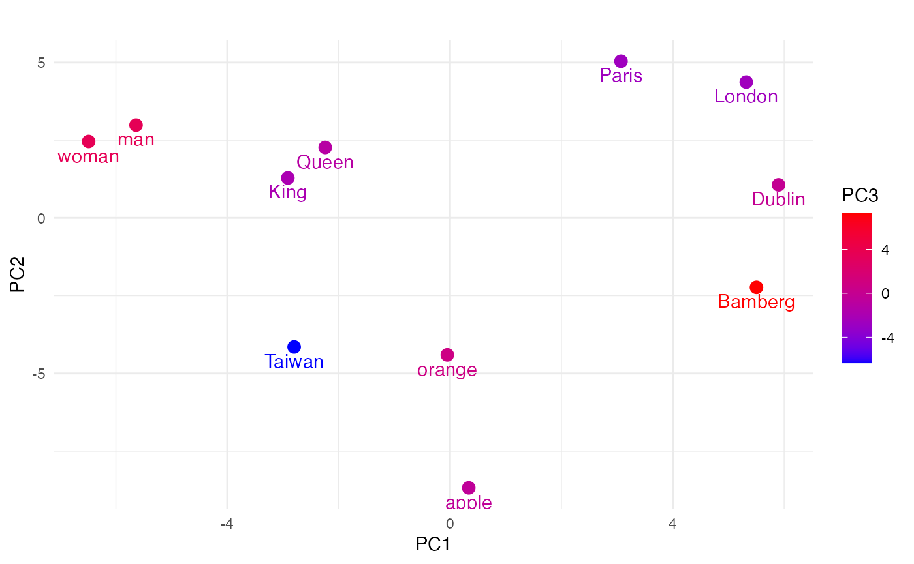

Tutorial
Yen-Chieh Liao | Sohini Timbadia | Stefan Müller
University of Birmingham & University College DublinSource:
vignettes/tutorial.Rmd
tutorial.RmdThe Overview
Flair NLP is an open-source library for Natural Language Processing (NLP) developed by Zalando Research. Known for its state-of-the-art solutions, such as contextual string embeddings for NLP tasks like Named Entity Recognition (NER), Part-of-Speech tagging (POS), and more, it has garnered the attention of the NLP community for its ease of use and powerful functionalities.
In addition, Flair NLP offers pre-trained models for various languages and tasks, and is compatible with fine-tuned transformers hosted on Hugging Face.
Sentence and Token
Sentence and Token are fundamental classes.
Sentence
A Sentence in Flair is an object that contains a sequence of Token objects, and it can be annotated with labels, such as named entities, part-of-speech tags, and more. It also can store embeddings for the sentence as a whole and different kinds of linguistic annotations.
Here’s a simple example of how you create a Sentence:
# Creating a Sentence object
library(flaiR)
string <- "What I see in UCD today, what I have seen of UCD in its impact on my own life and the life of Ireland."
Sentence <- flair_data()$Sentence
sentence <- Sentence(string)Sentence[26] means that there are a total of 26 tokens
in the sentence.
print(sentence)
#> Sentence[26]: "What I see in UCD today, what I have seen of UCD in its impact on my own life and the life of Ireland."Token
When you use Flair to handle text data,1 Sentence
and Token objects often play central roles in many use
cases. When you create a Sentence object, it automatically tokenizes the
text, removing the need to create the Token object manually.
Unlike R, which indexes from 1, Python indexes from 0. Therefore,
when using a for loop, I use seq_along(sentence) - 1. The
output should be something like:
# The Sentence object has automatically created and contains multiple Token objects
# We can iterate through the Sentence object to view each Token
for (i in seq_along(sentence)-1) {
print(sentence[[i]])
}
#> Token[0]: "What"
#> Token[1]: "I"
#> Token[2]: "see"
#> Token[3]: "in"
#> Token[4]: "UCD"
#> Token[5]: "today"
#> Token[6]: ","
#> Token[7]: "what"
#> Token[8]: "I"
#> Token[9]: "have"
#> Token[10]: "seen"
#> Token[11]: "of"
#> Token[12]: "UCD"
#> Token[13]: "in"
#> Token[14]: "its"
#> Token[15]: "impact"
#> Token[16]: "on"
#> Token[17]: "my"
#> Token[18]: "own"
#> Token[19]: "life"
#> Token[20]: "and"
#> Token[21]: "the"
#> Token[22]: "life"
#> Token[23]: "of"
#> Token[24]: "Ireland"
#> Token[25]: "."Or you can directly use $tokens method to print all
tokens.
print(sentence$tokens)
#> [[1]]
#> Token[0]: "What"
#>
#> [[2]]
#> Token[1]: "I"
#>
#> [[3]]
#> Token[2]: "see"
#>
#> [[4]]
#> Token[3]: "in"
#>
#> [[5]]
#> Token[4]: "UCD"
#>
#> [[6]]
#> Token[5]: "today"
#>
#> [[7]]
#> Token[6]: ","
#>
#> [[8]]
#> Token[7]: "what"
#>
#> [[9]]
#> Token[8]: "I"
#>
#> [[10]]
#> Token[9]: "have"
#>
#> [[11]]
#> Token[10]: "seen"
#>
#> [[12]]
#> Token[11]: "of"
#>
#> [[13]]
#> Token[12]: "UCD"
#>
#> [[14]]
#> Token[13]: "in"
#>
#> [[15]]
#> Token[14]: "its"
#>
#> [[16]]
#> Token[15]: "impact"
#>
#> [[17]]
#> Token[16]: "on"
#>
#> [[18]]
#> Token[17]: "my"
#>
#> [[19]]
#> Token[18]: "own"
#>
#> [[20]]
#> Token[19]: "life"
#>
#> [[21]]
#> Token[20]: "and"
#>
#> [[22]]
#> Token[21]: "the"
#>
#> [[23]]
#> Token[22]: "life"
#>
#> [[24]]
#> Token[23]: "of"
#>
#> [[25]]
#> Token[24]: "Ireland"
#>
#> [[26]]
#> Token[25]: "."Retrieve the Token
To comprehend the string representation format of the Sentence
object, tagging at least one token is adequate. Python’s
get_token(n) method allows us to retrieve the Token object
for a particular token. Additionally, we can use
[] to index a specific token.
# method in Python
sentence$get_token(5)
#> Token[4]: "UCD"
# indexing in R
sentence[6]
#> Token[6]: ","Each word (and punctuation) in the text is treated as an individual Token object. These Token objects store text information and other possible linguistic information (such as part-of-speech tags or named entity tags) and embedding (if you used a model to generate them).
While you do not need to create Token objects manually, understanding how to manage them is useful in situations where you might want to fine-tune the tokenization process. For example, you can control the exactness of tokenization by manually creating Token objects from a Sentence object.
This makes Flair very flexible when handling text data since the automatic tokenization feature can be used for rapid development, while also allowing users to fine-tune their tokenization.
Annotate POS tag and NER tag
The add_label(label_type, value) method can be employed
to assign a label to the token. In Universal POS tags, if
sentence[10] is ‘see’, ‘seen’ might be tagged as
VERB, indicating it is a past participle form of a
verb.
sentence[10]$add_label('manual-pos', 'VERB')
print(sentence[10])
#> Token[10]: "seen" → VERB (1.0000)We can also add a NER (Named Entity Recognition) tag to
sentence[4], “UCD”, identifying it as a university in
Dublin.
sentence[4]$add_label('ner', 'ORG')
print(sentence[4])
#> Token[4]: "UCD" → ORG (1.0000)If we print the sentence object, Sentence[50] provides
information for 50 tokens → [‘in’/ORG, ‘seen’/VERB], thus displaying two
tagging pieces of information.
print(sentence)
#> Sentence[26]: "What I see in UCD today, what I have seen of UCD in its impact on my own life and the life of Ireland." → ["UCD"/ORG, "seen"/VERB]Corpus
The Corpus object in Flair is a fundamental data structure that represents a dataset containing text samples, usually comprising of a training set, a development set (or validation set), and a test set. It’s designed to work smoothly with Flair’s models for tasks like named entity recognition, text classification, and more.
Attributes:
-
train: A list of sentences (List[Sentence]) that form the training dataset. -
dev(or development): A list of sentences (List[Sentence]) that form the development (or validation) dataset. -
test: A list of sentences (List[Sentence]) that form the test dataset.
Important Methods:
-
downsample: This method allows you to downsample (reduce) the number of sentences in the train, dev, and test splits. -
obtain_statistics: This method gives a quick overview of the statistics of the corpus, including the number of sentences and the distribution of labels. -
make_vocab_dictionary: Used to create a vocabulary dictionary from the corpus.
library(flaiR)
Corpus <- flair_data()$Corpus
Sentence <- flair_data()$Sentence
# Create some example sentences
train <- list(Sentence('This is a training example.'))
dev <- list(Sentence('This is a validation example.'))
test <- list(Sentence('This is a test example.'))
# Create a corpus using the custom data splits
corp <- Corpus(train = train, dev = dev, test = test)$obtain_statistics() method of the Corpus object in the
Flair library provides an overview of the dataset statistics. The method
returns a Python
dictionary with details about the training, validation
(development), and test datasets that make up the corpus. In R, you can
use the jsonlite package to format JSON.
library(jsonlite)
data <- fromJSON(corp$obtain_statistics())
formatted_str <- toJSON(data, pretty=TRUE)
print(formatted_str)
#> {
#> "TRAIN": {
#> "dataset": ["TRAIN"],
#> "total_number_of_documents": [1],
#> "number_of_documents_per_class": {},
#> "number_of_tokens_per_tag": {},
#> "number_of_tokens": {
#> "total": [6],
#> "min": [6],
#> "max": [6],
#> "avg": [6]
#> }
#> },
#> "TEST": {
#> "dataset": ["TEST"],
#> "total_number_of_documents": [1],
#> "number_of_documents_per_class": {},
#> "number_of_tokens_per_tag": {},
#> "number_of_tokens": {
#> "total": [6],
#> "min": [6],
#> "max": [6],
#> "avg": [6]
#> }
#> },
#> "DEV": {
#> "dataset": ["DEV"],
#> "total_number_of_documents": [1],
#> "number_of_documents_per_class": {},
#> "number_of_tokens_per_tag": {},
#> "number_of_tokens": {
#> "total": [6],
#> "min": [6],
#> "max": [6],
#> "avg": [6]
#> }
#> }
#> }In R
Below, we use data from the article The Temporal Focus of Campaign Communication by Stefan Muller, published in the Journal of Politics in 2020, as an example.
First, we vectorize the cc_muller$text using the
Sentence function to transform it into a list object. Then, we reformat
cc_muller$class_pro_retro as a factor. It’s essential to
note that R handles numerical values differently than Python. In R,
numerical values are represented with a floating point, so it’s
advisable to convert them into factors or strings. Lastly, we employ the
map function from the purrr package to assign labels to each sentence
corpus using the $add_label method.
library(purrr)
#>
#> Attaching package: 'purrr'
#> The following object is masked from 'package:jsonlite':
#>
#> flatten
data(cc_muller)
# The `Sentence` object tokenizes text
text <- lapply( cc_muller$text, Sentence)
# split sentence object to train and test.
labels <- as.factor(cc_muller$class_pro_retro)
# `$add_label` method assigns the corresponding coded type to each Sentence corpus.
text <- map2(text, labels, ~ .x$add_label("classification", .y), .progress = TRUE)To perform a train-test split using base R, we can follow these steps:
set.seed(2046)
sample <- sample(c(TRUE, FALSE), length(text), replace=TRUE, prob=c(0.8, 0.2))
train <- text[sample]
test <- text[!sample]
sprintf("Corpus object sizes - Train: %d | Test: %d", length(train), length(test))
#> [1] "Corpus object sizes - Train: 4710 | Test: 1148"If you don’t provide a dev set, flaiR will not force you to carve out a portion of your test set to serve as a dev set. However, in some cases when only the train and test sets are provided without a dev set, flaiR might automatically take a fraction of the train set (e.g., 10%) to use as a dev set (#2259). This is to offer a mechanism for model selection and to prevent the model from overfitting on the train set.
In the “Corpus” function, there is a random selection of the “dev”
dataset. To ensure reproducibility, we need to set the seed in the flaiR
framework. We can accomplish this by calling the top-level module
“flair” from {flaiR} and using $set_seed(1964L) to set the
seed.
flair <- import_flair()
flair$set_seed(1964L)
corp <- Corpus(train=train,
# dev=test,
test=test)
#> 2024-12-28 16:29:48,410 No dev split found. Using 10% (i.e. 471 samples) of the train split as dev data
sprintf("Corpus object sizes - Train: %d | Test: %d | Dev: %d",
length(corp$train),
length(corp$test),
length(corp$dev))
#> [1] "Corpus object sizes - Train: 4239 | Test: 1148 | Dev: 471"In the later sections, there will be more similar processing using
the Corpus. Following that, we will focus on advanced NLP
applications.
Sequence Taggings
Tag Entities in Text
Let’s run named entity recognition over the following example sentence: “I love Berlin and New York”. To do this, all you need to do is make a Sentence object for this text, load a pre-trained model and use it to predict tags for the object.
# attach flaiR in R
library(flaiR)
# make a sentence
Sentence <- flair_data()$Sentence
sentence <- Sentence('I love Berlin and New York.')
# load the NER tagger
Classifier <- flair_nn()$Classifier
tagger <- Classifier$load('ner')
#> 2024-12-28 16:29:49,642 SequenceTagger predicts: Dictionary with 20 tags: <unk>, O, S-ORG, S-MISC, B-PER, E-PER, S-LOC, B-ORG, E-ORG, I-PER, S-PER, B-MISC, I-MISC, E-MISC, I-ORG, B-LOC, E-LOC, I-LOC, <START>, <STOP>
# run NER over sentence
tagger$predict(sentence)To print all annotations:
# print the sentence with all annotations
print(sentence)
#> Sentence[7]: "I love Berlin and New York." → ["Berlin"/LOC, "New York"/LOC]Use a for loop to print out each POS tag. It’s important to note that
Python is indexed from 0. Therefore, in an R environment, we must use
seq_along(sentence$get_labels()) - 1.
Tag Part-of-Speech
We use flaiR/POS-english for POS tagging in the standard
models on Hugging Face.
# attach flaiR in R
library(flaiR)
# make a sentence
Sentence <- flair_data()$Sentence
sentence <- Sentence('I love Berlin and New York.')
# load the NER tagger
Classifier <- flair_nn()$Classifier
tagger <- Classifier$load('pos')
#> 2024-12-28 16:29:50,628 SequenceTagger predicts: Dictionary with 53 tags: <unk>, O, UH, ,, VBD, PRP, VB, PRP$, NN, RB, ., DT, JJ, VBP, VBG, IN, CD, NNS, NNP, WRB, VBZ, WDT, CC, TO, MD, VBN, WP, :, RP, EX, JJR, FW, XX, HYPH, POS, RBR, JJS, PDT, NNPS, RBS, AFX, WP$, -LRB-, -RRB-, ``, '', LS, $, SYM, ADDPenn Treebank POS Tags Reference
| Tag | Description | Example |
|---|---|---|
| DT | Determiner | the, a, these |
| NN | Noun, singular | cat, tree |
| NNS | Noun, plural | cats, trees |
| NNP | Proper noun, singular | John, London |
| NNPS | Proper noun, plural | Americans |
| VB | Verb, base form | take |
| VBD | Verb, past tense | took |
| VBG | Verb, gerund/present participle | taking |
| VBN | Verb, past participle | taken |
| VBP | Verb, non-3rd person singular present | take |
| VBZ | Verb, 3rd person singular present | takes |
| JJ | Adjective | big |
| RB | Adverb | quickly |
| O | Other | - |
| , | Comma | , |
| . | Period | . |
| : | Colon | : |
| -LRB- | Left bracket | ( |
| -RRB- | Right bracket | ) |
| `` | Opening quotation | ” |
| ’’ | Closing quotation | ” |
| HYPH | Hyphen | - |
| CD | Cardinal number | 1, 2, 3 |
| IN | Preposition | in, on, at |
| PRP | Personal pronoun | I, you, he |
| PRP$ | Possessive pronoun | my, your |
| UH | Interjection | oh, wow |
| FW | Foreign word | café |
| SYM | Symbol | +, % |
# run NER over sentence
tagger$predict(sentence)
# print the sentence with all annotations
print(sentence)
#> Sentence[7]: "I love Berlin and New York." → ["I"/PRP, "love"/VBP, "Berlin"/NNP, "and"/CC, "New"/NNP, "York"/NNP, "."/.]Use a for loop to print out each POS tag.
for (i in seq_along(sentence$get_labels())) {
print(sentence$get_labels()[[i]])
}
#> 'Token[0]: "I"'/'PRP' (1.0)
#> 'Token[1]: "love"'/'VBP' (1.0)
#> 'Token[2]: "Berlin"'/'NNP' (0.9999)
#> 'Token[3]: "and"'/'CC' (1.0)
#> 'Token[4]: "New"'/'NNP' (1.0)
#> 'Token[5]: "York"'/'NNP' (1.0)
#> 'Token[6]: "."'/'.' (1.0)Detect Sentiment
Let’s run sentiment analysis over the same sentence to determine whether it is POSITIVE or NEGATIVE.
You can do this with essentially the same code as above. Instead of
loading the ‘ner’ model, you now load the 'sentiment'
model:
# attach flaiR in R
library(flaiR)
# make a sentence
Sentence <- flair_data()$Sentence
sentence <- Sentence('I love Berlin and New York.')
# load the Classifier tagger from flair.nn module
Classifier <- flair_nn()$Classifier
tagger <- Classifier$load('sentiment')
# run sentiment analysis over sentence
tagger$predict(sentence)
# print the sentence with all annotations
print(sentence)
#> Sentence[7]: "I love Berlin and New York." → POSITIVE (0.9982)Dealing with Dataframe
Parts-of-Speech Tagging Across Full DataFrame
You can apply Part-of-Speech (POS) tagging across an entire DataFrame using Flair’s pre-trained models. Let’s walk through an example using the pos-fast model. You can apply Part-of-Speech (POS) tagging across an entire DataFrame using Flair’s pre-trained models. Let’s walk through an example using the pos-fast model. First, let’s load our required packages and sample data:
For POS tagging, we’ll use Flair’s pre-trained model. The pos-fast model offers a good balance between speed and accuracy. For more pre-trained models, check out Flair’s documentation at Flair POS Tagging Documentation. There are two ways to load the POS tagger:
- Load with tag dictionary display (default):
tagger_pos <- load_tagger_pos("pos-fast")
#> Loading POS tagger model: pos-fast
#> 2024-12-28 16:29:54,052 SequenceTagger predicts: Dictionary with 53 tags: <unk>, O, UH, ,, VBD, PRP, VB, PRP$, NN, RB, ., DT, JJ, VBP, VBG, IN, CD, NNS, NNP, WRB, VBZ, WDT, CC, TO, MD, VBN, WP, :, RP, EX, JJR, FW, XX, HYPH, POS, RBR, JJS, PDT, NNPS, RBS, AFX, WP$, -LRB-, -RRB-, ``, '', LS, $, SYM, ADD
#>
#> POS Tagger Dictionary:
#> ========================================
#> Total tags: 53
#> ----------------------------------------
#> Special: <unk>, O, <START>, <STOP>
#> Nouns: PRP, PRP$, NN, NNS, NNP, WP, EX, NNPS, WP$
#> Verbs: VBD, VB, VBP, VBG, VBZ, MD, VBN
#> Adjectives: JJ, JJR, POS, JJS
#> Adverbs: RB, WRB, RBR, RBS
#> Determiners: DT, WDT, PDT
#> Prepositions: IN, TO
#> Conjunctions: CC
#> Numbers: CD
#> Punctuation: <unk>, ,, ., :, HYPH, -LRB-, -RRB-, ``, '', $, NFP, <START>, <STOP>
#> Others: UH, FW, XX, LS, $, SYM, ADD
#> ----------------------------------------
#> Common POS Tag Meanings:
#> NN*: Nouns (NNP: Proper, NNS: Plural)
#> VB*: Verbs (VBD: Past, VBG: Gerund)
#> JJ*: Adjectives (JJR: Comparative)
#> RB*: Adverbs
#> PRP: Pronouns, DT: Determiners
#> IN: Prepositions, CC: Conjunctions
#> ========================================This will show you all available POS tags grouped by categories (nouns, verbs, adjectives, etc.).
- Load without tag display for a cleaner output:
pos_tagger <- load_tagger_pos("pos-fast", show_tags = FALSE)
#> Loading POS tagger model: pos-fast
#> 2024-12-28 16:29:54,501 SequenceTagger predicts: Dictionary with 53 tags: <unk>, O, UH, ,, VBD, PRP, VB, PRP$, NN, RB, ., DT, JJ, VBP, VBG, IN, CD, NNS, NNP, WRB, VBZ, WDT, CC, TO, MD, VBN, WP, :, RP, EX, JJR, FW, XX, HYPH, POS, RBR, JJS, PDT, NNPS, RBS, AFX, WP$, -LRB-, -RRB-, ``, '', LS, $, SYM, ADDNow we can process our texts:
results <- get_pos(texts = uk_immigration$text,
doc_ids = uk_immigration$speaker,
show.text_id = TRUE,
tagger = pos_tagger)
head(results, n = 10)
#> doc_id token_id
#> <char> <num>
#> 1: Philip Hollobone 0
#> 2: Philip Hollobone 1
#> 3: Philip Hollobone 2
#> 4: Philip Hollobone 3
#> 5: Philip Hollobone 4
#> 6: Philip Hollobone 5
#> 7: Philip Hollobone 6
#> 8: Philip Hollobone 7
#> 9: Philip Hollobone 8
#> 10: Philip Hollobone 9
#> text_id
#> <char>
#> 1: I thank Mr. Speaker for giving me permission to hold this debate today. I welcome the Minister-I very much appreciate the contact from his office prior to today-and the Conservative and Liberal Democrat Front Benchers to the debate. I also welcome my hon. Friends on the Back Benches. Immigration is the most important issue for my constituents. I get more complaints, comments and suggestions about immigration than about anything else. In the Kettering constituency, the number of immigrants is actually very low. There is a well-settled Sikh community in the middle of Kettering town itself, which has been in Kettering for some 40 or 50 years and is very much part of the local community and of the fabric of local life. There are other very small migrant groups in my constituency, but it is predominantly made up of indigenous British people. However, there is huge concern among my constituents about the level of immigration into our country. I believe that I am right in saying that, in recent years, net immigration into the United Kingdom is the largest wave of immigration that our country has ever known and, proportionately, is probably the biggest wave of immigration since the Norman conquest. My contention is that our country simply cannot cope with immigration on that scale-to coin a phrase, we simply cannot go on like this. It is about time that mainstream politicians started airing the views of their constituents, because for too long people have muttered under their breath that they are concerned about immigration. They have been frightened to speak out about it because they are frightened of being accused of being racist. My contention is that immigration is not a racist issue; it is a question of numbers. I personally could not care tuppence about the ethnicity of the immigrants concerned, the colour of their skin or the language that they speak. What I am concerned about is the very large numbers of new arrivals to our country. My contention is that the United Kingdom simply cannot cope with them.
#> 2: I thank Mr. Speaker for giving me permission to hold this debate today. I welcome the Minister-I very much appreciate the contact from his office prior to today-and the Conservative and Liberal Democrat Front Benchers to the debate. I also welcome my hon. Friends on the Back Benches. Immigration is the most important issue for my constituents. I get more complaints, comments and suggestions about immigration than about anything else. In the Kettering constituency, the number of immigrants is actually very low. There is a well-settled Sikh community in the middle of Kettering town itself, which has been in Kettering for some 40 or 50 years and is very much part of the local community and of the fabric of local life. There are other very small migrant groups in my constituency, but it is predominantly made up of indigenous British people. However, there is huge concern among my constituents about the level of immigration into our country. I believe that I am right in saying that, in recent years, net immigration into the United Kingdom is the largest wave of immigration that our country has ever known and, proportionately, is probably the biggest wave of immigration since the Norman conquest. My contention is that our country simply cannot cope with immigration on that scale-to coin a phrase, we simply cannot go on like this. It is about time that mainstream politicians started airing the views of their constituents, because for too long people have muttered under their breath that they are concerned about immigration. They have been frightened to speak out about it because they are frightened of being accused of being racist. My contention is that immigration is not a racist issue; it is a question of numbers. I personally could not care tuppence about the ethnicity of the immigrants concerned, the colour of their skin or the language that they speak. What I am concerned about is the very large numbers of new arrivals to our country. My contention is that the United Kingdom simply cannot cope with them.
#> 3: I thank Mr. Speaker for giving me permission to hold this debate today. I welcome the Minister-I very much appreciate the contact from his office prior to today-and the Conservative and Liberal Democrat Front Benchers to the debate. I also welcome my hon. Friends on the Back Benches. Immigration is the most important issue for my constituents. I get more complaints, comments and suggestions about immigration than about anything else. In the Kettering constituency, the number of immigrants is actually very low. There is a well-settled Sikh community in the middle of Kettering town itself, which has been in Kettering for some 40 or 50 years and is very much part of the local community and of the fabric of local life. There are other very small migrant groups in my constituency, but it is predominantly made up of indigenous British people. However, there is huge concern among my constituents about the level of immigration into our country. I believe that I am right in saying that, in recent years, net immigration into the United Kingdom is the largest wave of immigration that our country has ever known and, proportionately, is probably the biggest wave of immigration since the Norman conquest. My contention is that our country simply cannot cope with immigration on that scale-to coin a phrase, we simply cannot go on like this. It is about time that mainstream politicians started airing the views of their constituents, because for too long people have muttered under their breath that they are concerned about immigration. They have been frightened to speak out about it because they are frightened of being accused of being racist. My contention is that immigration is not a racist issue; it is a question of numbers. I personally could not care tuppence about the ethnicity of the immigrants concerned, the colour of their skin or the language that they speak. What I am concerned about is the very large numbers of new arrivals to our country. My contention is that the United Kingdom simply cannot cope with them.
#> 4: I thank Mr. Speaker for giving me permission to hold this debate today. I welcome the Minister-I very much appreciate the contact from his office prior to today-and the Conservative and Liberal Democrat Front Benchers to the debate. I also welcome my hon. Friends on the Back Benches. Immigration is the most important issue for my constituents. I get more complaints, comments and suggestions about immigration than about anything else. In the Kettering constituency, the number of immigrants is actually very low. There is a well-settled Sikh community in the middle of Kettering town itself, which has been in Kettering for some 40 or 50 years and is very much part of the local community and of the fabric of local life. There are other very small migrant groups in my constituency, but it is predominantly made up of indigenous British people. However, there is huge concern among my constituents about the level of immigration into our country. I believe that I am right in saying that, in recent years, net immigration into the United Kingdom is the largest wave of immigration that our country has ever known and, proportionately, is probably the biggest wave of immigration since the Norman conquest. My contention is that our country simply cannot cope with immigration on that scale-to coin a phrase, we simply cannot go on like this. It is about time that mainstream politicians started airing the views of their constituents, because for too long people have muttered under their breath that they are concerned about immigration. They have been frightened to speak out about it because they are frightened of being accused of being racist. My contention is that immigration is not a racist issue; it is a question of numbers. I personally could not care tuppence about the ethnicity of the immigrants concerned, the colour of their skin or the language that they speak. What I am concerned about is the very large numbers of new arrivals to our country. My contention is that the United Kingdom simply cannot cope with them.
#> 5: I thank Mr. Speaker for giving me permission to hold this debate today. I welcome the Minister-I very much appreciate the contact from his office prior to today-and the Conservative and Liberal Democrat Front Benchers to the debate. I also welcome my hon. Friends on the Back Benches. Immigration is the most important issue for my constituents. I get more complaints, comments and suggestions about immigration than about anything else. In the Kettering constituency, the number of immigrants is actually very low. There is a well-settled Sikh community in the middle of Kettering town itself, which has been in Kettering for some 40 or 50 years and is very much part of the local community and of the fabric of local life. There are other very small migrant groups in my constituency, but it is predominantly made up of indigenous British people. However, there is huge concern among my constituents about the level of immigration into our country. I believe that I am right in saying that, in recent years, net immigration into the United Kingdom is the largest wave of immigration that our country has ever known and, proportionately, is probably the biggest wave of immigration since the Norman conquest. My contention is that our country simply cannot cope with immigration on that scale-to coin a phrase, we simply cannot go on like this. It is about time that mainstream politicians started airing the views of their constituents, because for too long people have muttered under their breath that they are concerned about immigration. They have been frightened to speak out about it because they are frightened of being accused of being racist. My contention is that immigration is not a racist issue; it is a question of numbers. I personally could not care tuppence about the ethnicity of the immigrants concerned, the colour of their skin or the language that they speak. What I am concerned about is the very large numbers of new arrivals to our country. My contention is that the United Kingdom simply cannot cope with them.
#> 6: I thank Mr. Speaker for giving me permission to hold this debate today. I welcome the Minister-I very much appreciate the contact from his office prior to today-and the Conservative and Liberal Democrat Front Benchers to the debate. I also welcome my hon. Friends on the Back Benches. Immigration is the most important issue for my constituents. I get more complaints, comments and suggestions about immigration than about anything else. In the Kettering constituency, the number of immigrants is actually very low. There is a well-settled Sikh community in the middle of Kettering town itself, which has been in Kettering for some 40 or 50 years and is very much part of the local community and of the fabric of local life. There are other very small migrant groups in my constituency, but it is predominantly made up of indigenous British people. However, there is huge concern among my constituents about the level of immigration into our country. I believe that I am right in saying that, in recent years, net immigration into the United Kingdom is the largest wave of immigration that our country has ever known and, proportionately, is probably the biggest wave of immigration since the Norman conquest. My contention is that our country simply cannot cope with immigration on that scale-to coin a phrase, we simply cannot go on like this. It is about time that mainstream politicians started airing the views of their constituents, because for too long people have muttered under their breath that they are concerned about immigration. They have been frightened to speak out about it because they are frightened of being accused of being racist. My contention is that immigration is not a racist issue; it is a question of numbers. I personally could not care tuppence about the ethnicity of the immigrants concerned, the colour of their skin or the language that they speak. What I am concerned about is the very large numbers of new arrivals to our country. My contention is that the United Kingdom simply cannot cope with them.
#> 7: I thank Mr. Speaker for giving me permission to hold this debate today. I welcome the Minister-I very much appreciate the contact from his office prior to today-and the Conservative and Liberal Democrat Front Benchers to the debate. I also welcome my hon. Friends on the Back Benches. Immigration is the most important issue for my constituents. I get more complaints, comments and suggestions about immigration than about anything else. In the Kettering constituency, the number of immigrants is actually very low. There is a well-settled Sikh community in the middle of Kettering town itself, which has been in Kettering for some 40 or 50 years and is very much part of the local community and of the fabric of local life. There are other very small migrant groups in my constituency, but it is predominantly made up of indigenous British people. However, there is huge concern among my constituents about the level of immigration into our country. I believe that I am right in saying that, in recent years, net immigration into the United Kingdom is the largest wave of immigration that our country has ever known and, proportionately, is probably the biggest wave of immigration since the Norman conquest. My contention is that our country simply cannot cope with immigration on that scale-to coin a phrase, we simply cannot go on like this. It is about time that mainstream politicians started airing the views of their constituents, because for too long people have muttered under their breath that they are concerned about immigration. They have been frightened to speak out about it because they are frightened of being accused of being racist. My contention is that immigration is not a racist issue; it is a question of numbers. I personally could not care tuppence about the ethnicity of the immigrants concerned, the colour of their skin or the language that they speak. What I am concerned about is the very large numbers of new arrivals to our country. My contention is that the United Kingdom simply cannot cope with them.
#> 8: I thank Mr. Speaker for giving me permission to hold this debate today. I welcome the Minister-I very much appreciate the contact from his office prior to today-and the Conservative and Liberal Democrat Front Benchers to the debate. I also welcome my hon. Friends on the Back Benches. Immigration is the most important issue for my constituents. I get more complaints, comments and suggestions about immigration than about anything else. In the Kettering constituency, the number of immigrants is actually very low. There is a well-settled Sikh community in the middle of Kettering town itself, which has been in Kettering for some 40 or 50 years and is very much part of the local community and of the fabric of local life. There are other very small migrant groups in my constituency, but it is predominantly made up of indigenous British people. However, there is huge concern among my constituents about the level of immigration into our country. I believe that I am right in saying that, in recent years, net immigration into the United Kingdom is the largest wave of immigration that our country has ever known and, proportionately, is probably the biggest wave of immigration since the Norman conquest. My contention is that our country simply cannot cope with immigration on that scale-to coin a phrase, we simply cannot go on like this. It is about time that mainstream politicians started airing the views of their constituents, because for too long people have muttered under their breath that they are concerned about immigration. They have been frightened to speak out about it because they are frightened of being accused of being racist. My contention is that immigration is not a racist issue; it is a question of numbers. I personally could not care tuppence about the ethnicity of the immigrants concerned, the colour of their skin or the language that they speak. What I am concerned about is the very large numbers of new arrivals to our country. My contention is that the United Kingdom simply cannot cope with them.
#> 9: I thank Mr. Speaker for giving me permission to hold this debate today. I welcome the Minister-I very much appreciate the contact from his office prior to today-and the Conservative and Liberal Democrat Front Benchers to the debate. I also welcome my hon. Friends on the Back Benches. Immigration is the most important issue for my constituents. I get more complaints, comments and suggestions about immigration than about anything else. In the Kettering constituency, the number of immigrants is actually very low. There is a well-settled Sikh community in the middle of Kettering town itself, which has been in Kettering for some 40 or 50 years and is very much part of the local community and of the fabric of local life. There are other very small migrant groups in my constituency, but it is predominantly made up of indigenous British people. However, there is huge concern among my constituents about the level of immigration into our country. I believe that I am right in saying that, in recent years, net immigration into the United Kingdom is the largest wave of immigration that our country has ever known and, proportionately, is probably the biggest wave of immigration since the Norman conquest. My contention is that our country simply cannot cope with immigration on that scale-to coin a phrase, we simply cannot go on like this. It is about time that mainstream politicians started airing the views of their constituents, because for too long people have muttered under their breath that they are concerned about immigration. They have been frightened to speak out about it because they are frightened of being accused of being racist. My contention is that immigration is not a racist issue; it is a question of numbers. I personally could not care tuppence about the ethnicity of the immigrants concerned, the colour of their skin or the language that they speak. What I am concerned about is the very large numbers of new arrivals to our country. My contention is that the United Kingdom simply cannot cope with them.
#> 10: I thank Mr. Speaker for giving me permission to hold this debate today. I welcome the Minister-I very much appreciate the contact from his office prior to today-and the Conservative and Liberal Democrat Front Benchers to the debate. I also welcome my hon. Friends on the Back Benches. Immigration is the most important issue for my constituents. I get more complaints, comments and suggestions about immigration than about anything else. In the Kettering constituency, the number of immigrants is actually very low. There is a well-settled Sikh community in the middle of Kettering town itself, which has been in Kettering for some 40 or 50 years and is very much part of the local community and of the fabric of local life. There are other very small migrant groups in my constituency, but it is predominantly made up of indigenous British people. However, there is huge concern among my constituents about the level of immigration into our country. I believe that I am right in saying that, in recent years, net immigration into the United Kingdom is the largest wave of immigration that our country has ever known and, proportionately, is probably the biggest wave of immigration since the Norman conquest. My contention is that our country simply cannot cope with immigration on that scale-to coin a phrase, we simply cannot go on like this. It is about time that mainstream politicians started airing the views of their constituents, because for too long people have muttered under their breath that they are concerned about immigration. They have been frightened to speak out about it because they are frightened of being accused of being racist. My contention is that immigration is not a racist issue; it is a question of numbers. I personally could not care tuppence about the ethnicity of the immigrants concerned, the colour of their skin or the language that they speak. What I am concerned about is the very large numbers of new arrivals to our country. My contention is that the United Kingdom simply cannot cope with them.
#> token tag score
#> <char> <char> <num>
#> 1: I PRP 1.0000
#> 2: thank VBP 0.9992
#> 3: Mr. NNP 1.0000
#> 4: Speaker NNP 1.0000
#> 5: for IN 1.0000
#> 6: giving VBG 1.0000
#> 7: me PRP 1.0000
#> 8: permission NN 0.9999
#> 9: to TO 0.9999
#> 10: hold VB 1.0000Tagging Entities Across Full DataFrame
This section focuses on performing Named Entity Recognition (NER) on data stored in a dataframe format. My goal is to identify and tag named entities within text that is organized in a structured dataframe.
I load the flaiR package and use the built-in uk_immigration dataset. For demonstration purposes, I’m only taking the first two rows. This dataset contains discussions about immigration in the UK.
Load the pre-trained model ner. For more pre-trained
models, see https://flairnlp.github.io/docs/tutorial-basics/tagging-entities.
Next, I load the latest model hosted and maintained on Hugging Face by the Flair NLP team. For more Flair NER models, you can visit the official Flair NLP page on Hugging Face (https://huggingface.co/flair).
# Load model without displaying tags
# tagger <- load_tagger_ner("flair/ner-english-large", show_tags = FALSE)
library(flaiR)
tagger_ner <- load_tagger_ner("flair/ner-english-ontonotes")
#> 2024-12-28 16:29:58,864 SequenceTagger predicts: Dictionary with 75 tags: O, S-PERSON, B-PERSON, E-PERSON, I-PERSON, S-GPE, B-GPE, E-GPE, I-GPE, S-ORG, B-ORG, E-ORG, I-ORG, S-DATE, B-DATE, E-DATE, I-DATE, S-CARDINAL, B-CARDINAL, E-CARDINAL, I-CARDINAL, S-NORP, B-NORP, E-NORP, I-NORP, S-MONEY, B-MONEY, E-MONEY, I-MONEY, S-PERCENT, B-PERCENT, E-PERCENT, I-PERCENT, S-ORDINAL, B-ORDINAL, E-ORDINAL, I-ORDINAL, S-LOC, B-LOC, E-LOC, I-LOC, S-TIME, B-TIME, E-TIME, I-TIME, S-WORK_OF_ART, B-WORK_OF_ART, E-WORK_OF_ART, I-WORK_OF_ART, S-FAC
#>
#> NER Tagger Dictionary:
#> ========================================
#> Total tags: 75
#> Model: flair/ner-english-ontonotes
#> ----------------------------------------
#> Special : O, <START>, <STOP>
#> Person : S-PERSON, B-PERSON, E-PERSON, I-PERSON
#> Organization : S-ORG, B-ORG, E-ORG, I-ORG
#> Location : S-GPE, B-GPE, E-GPE, I-GPE, S-LOC, B-LOC, E-LOC, I-LOC
#> Time : S-DATE, B-DATE, E-DATE, I-DATE, S-TIME, B-TIME, E-TIME, I-TIME
#> Numbers : S-CARDINAL, B-CARDINAL, E-CARDINAL, I-CARDINAL, S-MONEY, B-MONEY, E-MONEY, I-MONEY, S-PERCENT, B-PERCENT, E-PERCENT, I-PERCENT, S-ORDINAL, B-ORDINAL, E-ORDINAL, I-ORDINAL
#> Groups : S-NORP, B-NORP, E-NORP, I-NORP
#> Facilities : S-FAC, B-FAC, E-FAC, I-FAC
#> Products : S-PRODUCT, B-PRODUCT, E-PRODUCT, I-PRODUCT
#> Events : S-EVENT, B-EVENT, E-EVENT, I-EVENT
#> Art : S-WORK_OF_ART, B-WORK_OF_ART, E-WORK_OF_ART, I-WORK_OF_ART
#> Languages : S-LANGUAGE, B-LANGUAGE, E-LANGUAGE, I-LANGUAGE
#> Laws : S-LAW, B-LAW, E-LAW, I-LAW
#> ----------------------------------------
#> Tag scheme: BIOES
#> B-: Beginning of multi-token entity
#> I-: Inside of multi-token entity
#> O: Outside (not part of any entity)
#> E-: End of multi-token entity
#> S-: Single token entity
#> ========================================I load a pre-trained NER model. Since I’m using a Mac M1/M2, I set the model to run on the MPS device for faster processing. If I want to use other pre-trained models, I can check the Flair documentation website for available options.
Now I’m ready to process the text:
results <- get_entities(texts = uk_immigration$text,
doc_ids = uk_immigration$speaker,
tagger = tagger_ner,
batch_size = 2,
verbose = FALSE)
#> CPU is used.
head(results, n = 10)
#> doc_id entity tag score
#> <char> <char> <char> <num>
#> 1: Philip Hollobone today DATE 0.9843611
#> 2: Philip Hollobone Conservative NORP 0.9976857
#> 3: Philip Hollobone Liberal Democrat Front Benchers ORG 0.7668496
#> 4: Philip Hollobone Kettering GPE 0.9885775
#> 5: Philip Hollobone Sikh NORP 0.9939976
#> 6: Philip Hollobone Kettering GPE 0.9955219
#> 7: Philip Hollobone Kettering GPE 0.9948048
#> 8: Philip Hollobone some 40 or 50 years DATE 0.8059650
#> 9: Philip Hollobone British NORP 0.9986911
#> 10: Philip Hollobone recent years DATE 0.8596770Embedding
Flair is a very popular natural language processing library, providing a variety of embedding methods for text representation. Flair Embeddings is a word embedding framework developed by Zalando. It focuses on word-level representation and can capture contextual information of words, allowing the same word to have different embeddings in different contexts. Unlike traditional word embeddings (such as Word2Vec or GloVe), Flair can dynamically generate word embeddings based on context and has achieved excellent results in various NLP tasks. Below are some key points about Flair Embeddings:
Context-Aware
Flair is a dynamic word embedding technique that can understand the meaning of words based on context. In contrast, static word embeddings, such as Word2Vec or GloVe, provide a fixed embedding for each word without considering its context in a sentence.
Therefore, context-sensitive embedding techniques, such as Flair, can capture the meaning of words in specific sentences more accurately, thus enhancing the performance of language models in various tasks.
Example:
Consider the following two English sentences:
- “I am interested in the bank of the river.”
- “I need to go to the bank to withdraw money.”
Here, the word “bank” has two different meanings. In the first sentence, it refers to the edge or shore of a river. In the second sentence, it refers to a financial institution.
For static embeddings, the word “bank” might have an embedding that lies somewhere between these two meanings because it doesn’t consider context. But for dynamic embeddings like Flair, “bank” in the first sentence will have an embedding related to rivers, and in the second sentence, it will have an embedding related to finance.
# Initialize Flair embeddings
FlairEmbeddings <- flair_embeddings()$FlairEmbeddings
Sentence <- flair_data()$Sentence
flair_embedding_forward <- FlairEmbeddings('news-forward')
# Define the two sentences
sentence1 <- Sentence("I am interested in the bank of the river.")
sentence2 <- Sentence("I need to go to the bank to withdraw money.")
# Get the embeddings
flair_embedding_forward$embed(sentence1)
#> [[1]]
#> Sentence[10]: "I am interested in the bank of the river."
flair_embedding_forward$embed(sentence2)
#> [[1]]
#> Sentence[11]: "I need to go to the bank to withdraw money."
# Extract the embedding for "bank" from the sentences
bank_embedding_sentence1 = sentence1[5]$embedding # "bank" is the seventh word
bank_embedding_sentence2 = sentence2[6]$embedding # "bank" is the sixth wordSame word, similar vector representation, but essentially different. In this way, you can see how the dynamic embeddings for “bank” in the two sentences differ based on context. Although we printed the embeddings here, in reality, they would be high-dimensional vectors, so you might see a lot of numbers. If you want a more intuitive view of the differences, you could compute the cosine similarity or other metrics between the two embeddings.
This is just a simple demonstration. In practice, you can also
combine multiple embedding techniques, such as
WordEmbeddings and FlairEmbeddings, to get
richer word vectors.
library(lsa)
#> Loading required package: SnowballC
cosine(as.numeric( bank_embedding_sentence1$numpy()),
as.numeric( bank_embedding_sentence2$numpy()))
#> [,1]
#> [1,] 0.7329551Character-Based
Flair uses a character-level language model, meaning it can generate embeddings for rare words or even misspelled words. This is an important feature because it allows the model to understand and process words that have never appeared in the training data. Flair uses a bidirectional LSTM (Long Short-Term Memory) network that operates at a character level. This allows it to feed individual characters into the LSTM instead of words.
Multilingual Support
Flair provides various pre-trained character-level language models, supporting contextual word embeddings for multiple languages. It allows you to easily combine different word embeddings (e.g., Flair Embeddings, Word2Vec, GloVe, etc.) to create powerful stacked embeddings.
Classic Wordembeddings
In Flair, the simplest form of embeddings that still contains semantic information about the word are called classic word embeddings. These embeddings are pre-trained and non-contextual.
Let’s retrieve a few word embeddings and use FastText embeddings with
the following code. To do so, we simply instantiate a WordEmbeddings
class by passing in the ID of the embedding of our choice. Then, we
simply wrap our text into a Sentence object, and call the
embed(sentence) method on our WordEmbeddings class.
WordEmbeddings <- flair_embeddings()$WordEmbeddings
Sentence <- flair_data()$Sentence
embedding <- WordEmbeddings('crawl')
sentence <- Sentence("one two three one")
embedding$embed(sentence)
#> [[1]]
#> Sentence[4]: "one two three one"
for (i in seq_along(sentence$tokens)) {
print(head(sentence$tokens[[i]]$embedding), n =5)
}
#> tensor([-0.0535, -0.0368, -0.2851, -0.0381, -0.0486, 0.2383])
#> tensor([ 0.0282, -0.0786, -0.1236, 0.1756, -0.1199, 0.0964])
#> tensor([-0.0920, -0.0690, -0.1475, 0.2313, -0.0872, 0.0799])
#> tensor([-0.0535, -0.0368, -0.2851, -0.0381, -0.0486, 0.2383])Flair supports a range of classic word embeddings, each offering unique features and application scopes. Below is an overview, detailing the ID required to load each embedding and its corresponding language.
| Embedding Type | ID | Language |
|---|---|---|
| GloVe | glove | English |
| Komninos | extvec | English |
| English | ||
| Turian (small) | turian | English |
| FastText (crawl) | crawl | English |
| FastText (news & Wikipedia) | ar | Arabic |
| FastText (news & Wikipedia) | bg | Bulgarian |
| FastText (news & Wikipedia) | ca | Catalan |
| FastText (news & Wikipedia) | cz | Czech |
| FastText (news & Wikipedia) | da | Danish |
| FastText (news & Wikipedia) | de | German |
| FastText (news & Wikipedia) | es | Spanish |
| FastText (news & Wikipedia) | en | English |
| FastText (news & Wikipedia) | eu | Basque |
| FastText (news & Wikipedia) | fa | Persian |
| FastText (news & Wikipedia) | fi | Finnish |
| FastText (news & Wikipedia) | fr | French |
| FastText (news & Wikipedia) | he | Hebrew |
| FastText (news & Wikipedia) | hi | Hindi |
| FastText (news & Wikipedia) | hr | Croatian |
| FastText (news & Wikipedia) | id | Indonesian |
| FastText (news & Wikipedia) | it | Italian |
| FastText (news & Wikipedia) | ja | Japanese |
| FastText (news & Wikipedia) | ko | Korean |
| FastText (news & Wikipedia) | nl | Dutch |
| FastText (news & Wikipedia) | no | Norwegian |
| FastText (news & Wikipedia) | pl | Polish |
| FastText (news & Wikipedia) | pt | Portuguese |
| FastText (news & Wikipedia) | ro | Romanian |
| FastText (news & Wikipedia) | ru | Russian |
| FastText (news & Wikipedia) | si | Slovenian |
| FastText (news & Wikipedia) | sk | Slovak |
| FastText (news & Wikipedia) | sr | Serbian |
| FastText (news & Wikipedia) | sv | Swedish |
| FastText (news & Wikipedia) | tr | Turkish |
| FastText (news & Wikipedia) | zh | Chinese |
Contexual Embeddings
The idea behind contextual string embeddings is that each word embedding should be defined by not only its syntactic-semantic meaning but also the context it appears in. What this means is that each word will have a different embedding for every context it appears in. Each pre-trained Flair model offers a forward version and a backward version. Let’s assume you are processing a language that, just like this text, uses the left-to-right script. The forward version takes into account the context that happens before the word – on the left-hand side. The backward version works in the opposite direction. It takes into account the context after the word – on the right-hand side of the word. If this is true, then two same words that appear at the beginning of two different sentences should have identical forward embeddings, because their context is null. Let’s test this out:
Because we are using a forward model, it only takes into account the context that occurs before a word. Additionally, since our word has no context on the left-hand side of its position in the sentence, the two embeddings are identical, and the code assumes they are identical, indeed output is True.
FlairEmbeddings <- flair_embeddings()$FlairEmbeddings
embedding <- FlairEmbeddings('news-forward')
s1 <- Sentence("nice shirt")
s2 <- Sentence("nice pants")
embedding$embed(s1)
#> [[1]]
#> Sentence[2]: "nice shirt"
embedding$embed(s2)
#> [[1]]
#> Sentence[2]: "nice pants"
cat(" s1 sentence:", paste(s1[0], sep = ""), "\n", "s2 sentence:", paste(s2[0], sep = ""))
#> s1 sentence: Token[0]: "nice"
#> s2 sentence: Token[0]: "nice"We test whether the sum of the two 2048 embeddings of
nice is equal to 2048. If it is true, it indicates that the
embedding results are consistent, which should theoretically be the
case.
length(s1[0]$embedding$numpy()) == sum(s1[0]$embedding$numpy() == s2[0]$embedding$numpy())
#> [1] TRUENow we separately add a few more words, very and
pretty, into two sentence objects.
s1 <- Sentence("very nice shirt")
s2 <- Sentence("pretty nice pants")
embedding$embed(s1)
#> [[1]]
#> Sentence[3]: "very nice shirt"
embedding$embed(s2)
#> [[1]]
#> Sentence[3]: "pretty nice pants"The two sets of embeddings are not identical because the words are different, so it returns FALSE.
length(s1[0]$embedding$numpy()) == sum(s1[0]$embedding$numpy() == s2[0]$embedding$numpy())
#> [1] FALSEThe measure of similarity between two vectors in an inner product space is known as cosine similarity. The formula for calculating cosine similarity between two vectors, such as vectors A and B, is as follows:
library(lsa)
vector1 <- as.numeric(s1[0]$embedding$numpy())
vector2 <- as.numeric(s2[0]$embedding$numpy())We can observe that the similarity between the two words is 0.55.
Extracting Embeddings from BERT
First, we utilize the TransformerWordEmbeddings function
to download BERT, and more transformer models can also be found on Flair NLP’s Hugging Face.
library(flaiR)
TransformerWordEmbeddings <- flair_embeddings()$TransformerWordEmbeddings("bert-base-uncased")
embedding <- TransformerWordEmbeddings$embed(sentence)Next, we traverse each token in the sentence and print them.
# Iterate through each token in the sentence, printing them.
# Utilize reticulate::py_str(token) to view each token, given that the sentence is a Python object.
for (i in seq_along(sentence$tokens)) {
cat("Token: ", reticulate::py_str(sentence$tokens[[i]]), "\n")
# Access the embedding of the token, converting it to an R object,
# and print the first 10 elements of the vector.
token_embedding <- sentence$tokens[[i]]$embedding
print(head(token_embedding, 10))
}
#> Token: Token[0]: "one"
#> tensor([-0.0535, -0.0368, -0.2851, -0.0381, -0.0486, 0.2383, -0.1200, 0.2620,
#> -0.0575, 0.0228])
#> Token: Token[1]: "two"
#> tensor([ 0.0282, -0.0786, -0.1236, 0.1756, -0.1199, 0.0964, -0.1327, 0.4449,
#> -0.0264, -0.1168])
#> Token: Token[2]: "three"
#> tensor([-0.0920, -0.0690, -0.1475, 0.2313, -0.0872, 0.0799, -0.0901, 0.4403,
#> -0.0103, -0.1494])
#> Token: Token[3]: "one"
#> tensor([-0.0535, -0.0368, -0.2851, -0.0381, -0.0486, 0.2383, -0.1200, 0.2620,
#> -0.0575, 0.0228])Visialized Embeddings
Word Embeddings (GloVe)
GloVe embeddings are Pytorch vectors of dimensionality 100.
For English, Flair provides a few more options. Here, you can use
en-gloveanden-extvecwith the WordEmbeddings class.
# Initialize Text Processing Tools ---------------------------
# Import Sentence class for text operations
Sentence <- flair_data()$Sentence
# Configure GloVe Embeddings --------------------------------
# Load WordEmbeddings class and initialize GloVe model
WordEmbeddings <- flair_embeddings()$WordEmbeddings
embedding <- WordEmbeddings("glove")
# Text Processing and Embedding -----------------------------
# Create sentence with semantic relationship pairs
sentence <- Sentence("King Queen man woman Paris London apple orange Taiwan Dublin Bamberg")
# Apply GloVe embeddings to the sentence
embedding$embed(sentence)
#> [[1]]
#> Sentence[11]: "King Queen man woman Paris London apple orange Taiwan Dublin Bamberg"
# Extract embeddings into matrix format
sen_df <- process_embeddings(sentence,
verbose = TRUE)
#> Extracting token embeddings...
#> Converting embeddings to matrix format...Processing completed in 0.004 seconds
#> Generated embedding matrix with 11 tokens and 100 dimensions
# Dimensionality Reduction ---------------------------------
# Set random seed for reproducibility
set.seed(123)
# Apply PCA to reduce dimensions to 3 components
pca_result <- prcomp(sen_df, center = TRUE, scale. = TRUE)
# Extract first three principal components
word_embeddings_matrix <- as.data.frame(pca_result$x[,1:3])
word_embeddings_matrix
#> PC1 PC2 PC3
#> King -2.9120910 1.285200 -1.95053854
#> Queen -2.2413804 2.266714 -1.09020972
#> man -5.6381902 2.984461 3.55462010
#> woman -6.4891003 2.458607 3.56693660
#> Paris 3.0702212 5.039061 -2.65962020
#> London 5.3196216 4.368433 -2.60726627
#> apple 0.3362535 -8.679358 -0.44752722
#> orange -0.0485467 -4.404101 0.77151480
#> Taiwan -2.7993829 -4.149287 -6.33296039
#> Dublin 5.8994096 1.063291 -0.09271925
#> Bamberg 5.5031854 -2.233020 7.287770092D Plot
library(ggplot2)
#> Error in get(paste0(generic, ".", class), envir = get_method_env()) :
#> object 'type_sum.accel' not found
glove_plot2D <- ggplot(word_embeddings_matrix, aes(x = PC1, y = PC2, color = PC3,
label = rownames(word_embeddings_matrix))) +
geom_point(size = 3) +
geom_text(vjust = 1.5, hjust = 0.5) +
scale_color_gradient(low = "blue", high = "red") +
theme_minimal() +
labs(title = "", x = "PC1", y = "PC2", color = "PC3")
# guides(color = "none")
glove_plot2D
Stack Embeddings Method (GloVe + Back/forwad FlairEmbeddings or More)
# Initialize Embeddings -----------------------------
# Load embedding types from flaiR
WordEmbeddings <- flair_embeddings()$WordEmbeddings
FlairEmbeddings <- flair_embeddings()$FlairEmbeddings
StackedEmbeddings <- flair_embeddings()$StackedEmbeddings
# Configure Embeddings ----------------------------
# Initialize GloVe word embeddings
glove_embedding <- WordEmbeddings('glove')
# Initialize Flair contextual embeddings
flair_embedding_forward <- FlairEmbeddings('news-forward')
flair_embedding_backward <- FlairEmbeddings('news-backward')
# Initialize GloVe for individual use
embedding <- WordEmbeddings("glove")
# Create stacked embeddings combining GloVe and bidirectional Flair
stacked_embeddings <- StackedEmbeddings(c(glove_embedding,
flair_embedding_forward,
flair_embedding_backward))
# Text Processing --------------------------------
# Load Sentence class from flaiR
Sentence <- flair_data()$Sentence
# Create test sentence with semantic relationships
sentence <- Sentence("King Queen man woman Paris London apple orange Taiwan Dublin Bamberg")
# Apply embeddings and extract features ----------
# Embed text using stacked embeddings
stacked_embeddings$embed(sentence)
# Extract embeddings matrix with processing details
sen_df <- process_embeddings(sentence,
verbose = TRUE)
#> Extracting token embeddings...
#> Converting embeddings to matrix format...Processing completed in 0.004 seconds
#> Generated embedding matrix with 11 tokens and 4196 dimensions
# Dimensionality Reduction -----------------------
set.seed(123)
# Perform PCA for visualization
pca_result <- prcomp(sen_df, center = TRUE, scale. = TRUE)
# Extract first three principal components
word_embeddings_matrix <- as.data.frame(pca_result$x[,1:3])
word_embeddings_matrix
#> PC1 PC2 PC3
#> King -8.607474 67.2291112 32.4862807
#> Queen 1.757707 12.0477210 -26.8302480
#> man 70.603191 -6.6184707 13.1651688
#> woman 22.532043 -8.1126267 -0.9073998
#> Paris -11.395619 -0.3051693 -17.5197067
#> London -8.709174 -2.7450626 -14.1780531
#> apple -8.739477 -15.7725211 -6.3796349
#> orange -25.178329 -38.8501308 51.4907636
#> Taiwan -9.132397 -5.0252091 -11.0918877
#> Dublin -10.925014 -3.3407329 -10.1367729
#> Bamberg -12.205457 1.4930909 -10.0985100
# 2D Plot
library(ggplot2)
stacked_plot2D <- ggplot(word_embeddings_matrix, aes(x = PC1, y = PC2, color = PC3,
label = rownames(word_embeddings_matrix))) +
geom_point(size = 2) +
geom_text(vjust = 1.5, hjust = 0.5) +
scale_color_gradient(low = "blue", high = "red") +
theme_minimal() +
labs(title = "", x = "PC1", y = "PC2", color = "PC3")
stacked_plot2D
Transformer Embeddings (BERT or More)
# Load Required Package ----------------------------
library(flaiR)
# Initialize BERT and Text Processing --------------
# Import Sentence class for text operations
Sentence <- flair_data()$Sentence
# Initialize BERT model (base uncased version)
TransformerWordEmbeddings <- flair_embeddings()$TransformerWordEmbeddings("bert-base-uncased")
# Text Processing and Embedding --------------------
# Create sentence with semantic relationship pairs
sentence <- Sentence("King Queen man woman Paris London apple orange Taiwan Dublin Bamberg")
# Apply BERT embeddings to the sentence
TransformerWordEmbeddings$embed(sentence)
#> [[1]]
#> Sentence[11]: "King Queen man woman Paris London apple orange Taiwan Dublin Bamberg"
# Extract embeddings into matrix format
sen_df <- process_embeddings(sentence, verbose = TRUE)
#> Extracting token embeddings...
#> Converting embeddings to matrix format...Processing completed in 0.003 seconds
#> Generated embedding matrix with 11 tokens and 768 dimensions
# Dimensionality Reduction ------------------------
# Set random seed for reproducibility
set.seed(123)
# Apply PCA to reduce dimensions to 3 components
pca_result <- prcomp(sen_df, center = TRUE, scale. = TRUE)
# Extract first three principal components
word_embeddings_matrix <- as.data.frame(pca_result$x[,1:3])
word_embeddings_matrix
#> PC1 PC2 PC3
#> King -11.6842347 4.264808 -2.539324
#> Queen -18.6452298 13.278101 -9.781921
#> man -18.3565835 10.571228 -1.609781
#> woman -10.6397328 -2.072400 2.264161
#> Paris 6.9078801 -9.409341 -10.378025
#> London 10.7817432 -8.882279 -11.447068
#> apple -0.6539988 -8.305127 12.104269
#> orange -3.4409945 -4.756969 19.216404
#> Taiwan 4.5377624 -12.949620 4.782958
#> Dublin 13.4844947 -11.327335 -7.191557
#> Bamberg 27.7088939 29.588933 4.579885
# 2D Plot
library(ggplot2)
bert_plot2D <- ggplot(word_embeddings_matrix, aes(x = PC1, y = PC2, color = PC3,
label = rownames(word_embeddings_matrix))) +
geom_point(size = 2) +
geom_text(vjust = 1.5, hjust = 0.5) +
scale_color_gradient(low = "blue", high = "red") +
theme_minimal() +
labs(title = "", x = "PC1", y = "PC2", color = "PC3")
# guides(color = "none")
stacked_plot2DTraining a Binary Classifier
In this section, we’ll train a sentiment analysis model that can categorize text as either positive or negative. This case study is adapted from pages 116 to 130 of Tadej Magajna’s book, ‘Natural Language Processing with Flair’. The process for training text classifiers in Flair mirrors the process followed for sequence labeling models. Specifically, the steps to train text classifiers are:
- Load a tagged corpus and compute the label dictionary map.
- Prepare the document embeddings.
- Initialize the
TextClassifierclass. - Train the model.
Loading a Tagged Corpus
Training text classification models requires a set of text documents (typically, sentences or paragraphs) where each document is associated with one or more classification labels. To train our sentiment analysis text classification model, we will be using the famous Internet Movie Database (IMDb) dataset, which contains 50,000 movie reviews from IMDB, where each review is labeled as either positive or negative. References to this dataset are already baked into Flair, so loading the dataset couldn’t be easier:
library(flaiR)
# load IMDB from flair_datasets module
Corpus <- flair_data()$Corpus
IMDB <- flair_datasets()$IMDB
# downsize to 0.05
corpus = IMDB()
#> 2024-12-28 16:30:20,009 Reading data from /Users/yenchiehliao/.flair/datasets/imdb_v4-rebalanced
#> 2024-12-28 16:30:20,009 Train: /Users/yenchiehliao/.flair/datasets/imdb_v4-rebalanced/train.txt
#> 2024-12-28 16:30:20,009 Dev: None
#> 2024-12-28 16:30:20,009 Test: None
#> 2024-12-28 16:30:20,523 No test split found. Using 10% (i.e. 5000 samples) of the train split as test data
#> 2024-12-28 16:30:20,533 No dev split found. Using 10% (i.e. 4500 samples) of the train split as dev data
#> 2024-12-28 16:30:20,533 Initialized corpus /Users/yenchiehliao/.flair/datasets/imdb_v4-rebalanced (label type name is 'sentiment')
corpus$downsample(0.05)
#> <flair.datasets.document_classification.IMDB object at 0x339d987d0>Print the sizes in the corpus object as follows - test: %d | train: %d | dev: %d”
test_size <- length(corpus$test)
train_size <- length(corpus$train)
dev_size <- length(corpus$dev)
output <- sprintf("Corpus object sizes - Test: %d | Train: %d | Dev: %d", test_size, train_size, dev_size)
print(output)
#> [1] "Corpus object sizes - Test: 250 | Train: 2025 | Dev: 225"
lbl_type = 'sentiment'
label_dict = corpus$make_label_dictionary(label_type=lbl_type)
#> 2024-12-28 16:30:20,620 Computing label dictionary. Progress:
#> 2024-12-28 16:30:23,817 Dictionary created for label 'sentiment' with 2 values: POSITIVE (seen 1014 times), NEGATIVE (seen 1011 times)Loading the Embeddings
flaiR covers all the different types of document embeddings that we
can use. Here, we simply use DocumentPoolEmbeddings. They
require no training prior to training the classification model
itself:
DocumentPoolEmbeddings <- flair_embeddings()$DocumentPoolEmbeddings
WordEmbeddings <- flair_embeddings()$WordEmbeddings
glove = WordEmbeddings('glove')
document_embeddings = DocumentPoolEmbeddings(glove)Initializing the TextClassifier
# initiate TextClassifier
TextClassifier <- flair_models()$TextClassifier
classifier <- TextClassifier(document_embeddings,
label_dictionary = label_dict,
label_type = lbl_type)$to allows you to set the device to use CPU, GPU, or
specific MPS devices on Mac (such as mps:0, mps:1, mps:2).
classifier$to(flair_device("mps")) TextClassifier(
(embeddings): DocumentPoolEmbeddings(
fine_tune_mode=none, pooling=mean
(embeddings): StackedEmbeddings(
(list_embedding_0): WordEmbeddings(
'glove'
(embedding): Embedding(400001, 100)
)
)
)
(decoder): Linear(in_features=100, out_features=3, bias=True)
(dropout): Dropout(p=0.0, inplace=False)
(locked_dropout): LockedDropout(p=0.0)
(word_dropout): WordDropout(p=0.0)
(loss_function): CrossEntropyLoss()
)Training the Model
Training the text classifier model involves two simple steps:
- Defining the model trainer class by passing in the classifier model and the corpus
- Setting off the training process passing in the required training hyper-parameters.
It is worth noting that the ‘L’ in numbers like 32L and 5L is used in R to denote that the number is an integer. Without the ‘L’ suffix, numbers in R are treated as numeric, which are by default double-precision floating-point numbers. In contrast, Python determines the type based on the value of the number itself. Whole numbers (e.g., 5 or 32) are of type int, while numbers with decimal points (e.g., 5.0) are of type float. Floating-point numbers in both languages are representations of real numbers but can have some approximation due to the way they are stored in memory.
# initiate ModelTrainer
ModelTrainer <- flair_trainers()$ModelTrainer
# fit the model
trainer <- ModelTrainer(classifier, corpus)
# start to train
# note: the 'L' in 32L is used in R to denote that the number is an integer.
trainer$train('classifier',
learning_rate=0.1,
mini_batch_size=32L,
# specifies how embeddings are stored in RAM, ie."cpu", "cuda", "gpu", "mps".
# embeddings_storage_mode = "mps",
max_epochs=10L)
#> 2024-12-28 16:30:25,722 ----------------------------------------------------------------------------------------------------
#> 2024-12-28 16:30:25,722 Model: "TextClassifier(
#> (embeddings): DocumentPoolEmbeddings(
#> fine_tune_mode=none, pooling=mean
#> (embeddings): StackedEmbeddings(
#> (list_embedding_0): WordEmbeddings(
#> 'glove'
#> (embedding): Embedding(400001, 100)
#> )
#> )
#> )
#> (decoder): Linear(in_features=100, out_features=2, bias=True)
#> (dropout): Dropout(p=0.0, inplace=False)
#> (locked_dropout): LockedDropout(p=0.0)
#> (word_dropout): WordDropout(p=0.0)
#> (loss_function): CrossEntropyLoss()
#> (weights): None
#> (weight_tensor) None
#> )"
#> 2024-12-28 16:30:25,722 ----------------------------------------------------------------------------------------------------
#> 2024-12-28 16:30:25,722 Corpus: 2025 train + 225 dev + 250 test sentences
#> 2024-12-28 16:30:25,722 ----------------------------------------------------------------------------------------------------
#> 2024-12-28 16:30:25,722 Train: 2025 sentences
#> 2024-12-28 16:30:25,722 (train_with_dev=False, train_with_test=False)
#> 2024-12-28 16:30:25,722 ----------------------------------------------------------------------------------------------------
#> 2024-12-28 16:30:25,722 Training Params:
#> 2024-12-28 16:30:25,723 - learning_rate: "0.1"
#> 2024-12-28 16:30:25,723 - mini_batch_size: "32"
#> 2024-12-28 16:30:25,723 - max_epochs: "10"
#> 2024-12-28 16:30:25,723 - shuffle: "True"
#> 2024-12-28 16:30:25,723 ----------------------------------------------------------------------------------------------------
#> 2024-12-28 16:30:25,723 Plugins:
#> 2024-12-28 16:30:25,723 - AnnealOnPlateau | patience: '3', anneal_factor: '0.5', min_learning_rate: '0.0001'
#> 2024-12-28 16:30:25,723 ----------------------------------------------------------------------------------------------------
#> 2024-12-28 16:30:25,723 Final evaluation on model from best epoch (best-model.pt)
#> 2024-12-28 16:30:25,723 - metric: "('micro avg', 'f1-score')"
#> 2024-12-28 16:30:25,723 ----------------------------------------------------------------------------------------------------
#> 2024-12-28 16:30:25,723 Computation:
#> 2024-12-28 16:30:25,723 - compute on device: cpu
#> 2024-12-28 16:30:25,723 - embedding storage: cpu
#> 2024-12-28 16:30:25,723 ----------------------------------------------------------------------------------------------------
#> 2024-12-28 16:30:25,723 Model training base path: "classifier"
#> 2024-12-28 16:30:25,723 ----------------------------------------------------------------------------------------------------
#> 2024-12-28 16:30:25,723 ----------------------------------------------------------------------------------------------------
#> 2024-12-28 16:30:26,436 epoch 1 - iter 6/64 - loss 1.08459203 - time (sec): 0.71 - samples/sec: 269.46 - lr: 0.100000 - momentum: 0.000000
#> 2024-12-28 16:30:27,167 epoch 1 - iter 12/64 - loss 1.07419472 - time (sec): 1.44 - samples/sec: 266.05 - lr: 0.100000 - momentum: 0.000000
#> 2024-12-28 16:30:27,960 epoch 1 - iter 18/64 - loss 1.04684123 - time (sec): 2.24 - samples/sec: 257.47 - lr: 0.100000 - momentum: 0.000000
#> 2024-12-28 16:30:28,597 epoch 1 - iter 24/64 - loss 1.02129807 - time (sec): 2.87 - samples/sec: 267.27 - lr: 0.100000 - momentum: 0.000000
#> 2024-12-28 16:30:29,291 epoch 1 - iter 30/64 - loss 0.99138649 - time (sec): 3.57 - samples/sec: 269.07 - lr: 0.100000 - momentum: 0.000000
#> 2024-12-28 16:30:29,978 epoch 1 - iter 36/64 - loss 0.97801477 - time (sec): 4.25 - samples/sec: 270.76 - lr: 0.100000 - momentum: 0.000000
#> 2024-12-28 16:30:30,870 epoch 1 - iter 42/64 - loss 0.96740411 - time (sec): 5.15 - samples/sec: 261.13 - lr: 0.100000 - momentum: 0.000000
#> 2024-12-28 16:30:31,568 epoch 1 - iter 48/64 - loss 0.96869479 - time (sec): 5.84 - samples/sec: 262.80 - lr: 0.100000 - momentum: 0.000000
#> 2024-12-28 16:30:32,261 epoch 1 - iter 54/64 - loss 0.96146011 - time (sec): 6.54 - samples/sec: 264.31 - lr: 0.100000 - momentum: 0.000000
#> 2024-12-28 16:30:32,948 epoch 1 - iter 60/64 - loss 0.94964474 - time (sec): 7.22 - samples/sec: 265.75 - lr: 0.100000 - momentum: 0.000000
#> 2024-12-28 16:30:33,368 ----------------------------------------------------------------------------------------------------
#> 2024-12-28 16:30:33,368 EPOCH 1 done: loss 0.9512 - lr: 0.100000
#> 2024-12-28 16:30:34,470 DEV : loss 0.7587453722953796 - f1-score (micro avg) 0.5467
#> 2024-12-28 16:30:34,828 - 0 epochs without improvement
#> 2024-12-28 16:30:34,833 saving best model
#> 2024-12-28 16:30:35,198 ----------------------------------------------------------------------------------------------------
#> 2024-12-28 16:30:35,983 epoch 2 - iter 6/64 - loss 0.91960125 - time (sec): 0.78 - samples/sec: 244.59 - lr: 0.100000 - momentum: 0.000000
#> 2024-12-28 16:30:36,665 epoch 2 - iter 12/64 - loss 0.90101201 - time (sec): 1.47 - samples/sec: 261.82 - lr: 0.100000 - momentum: 0.000000
#> 2024-12-28 16:30:37,350 epoch 2 - iter 18/64 - loss 0.89713474 - time (sec): 2.15 - samples/sec: 267.70 - lr: 0.100000 - momentum: 0.000000
#> 2024-12-28 16:30:38,244 epoch 2 - iter 24/64 - loss 0.89578880 - time (sec): 3.05 - samples/sec: 252.21 - lr: 0.100000 - momentum: 0.000000
#> 2024-12-28 16:30:38,893 epoch 2 - iter 30/64 - loss 0.89339162 - time (sec): 3.69 - samples/sec: 259.82 - lr: 0.100000 - momentum: 0.000000
#> 2024-12-28 16:30:39,621 epoch 2 - iter 36/64 - loss 0.89556786 - time (sec): 4.42 - samples/sec: 260.46 - lr: 0.100000 - momentum: 0.000000
#> 2024-12-28 16:30:40,313 epoch 2 - iter 42/64 - loss 0.89395156 - time (sec): 5.11 - samples/sec: 262.78 - lr: 0.100000 - momentum: 0.000000
#> 2024-12-28 16:30:40,986 epoch 2 - iter 48/64 - loss 0.89015336 - time (sec): 5.79 - samples/sec: 265.40 - lr: 0.100000 - momentum: 0.000000
#> 2024-12-28 16:30:41,836 epoch 2 - iter 54/64 - loss 0.89367774 - time (sec): 6.64 - samples/sec: 260.35 - lr: 0.100000 - momentum: 0.000000
#> 2024-12-28 16:30:42,520 epoch 2 - iter 60/64 - loss 0.90374267 - time (sec): 7.32 - samples/sec: 262.23 - lr: 0.100000 - momentum: 0.000000
#> 2024-12-28 16:30:43,007 ----------------------------------------------------------------------------------------------------
#> 2024-12-28 16:30:43,007 EPOCH 2 done: loss 0.9070 - lr: 0.100000
#> 2024-12-28 16:30:43,893 DEV : loss 0.7486857771873474 - f1-score (micro avg) 0.5467
#> 2024-12-28 16:30:44,249 - 0 epochs without improvement
#> 2024-12-28 16:30:44,251 ----------------------------------------------------------------------------------------------------
#> 2024-12-28 16:30:45,236 epoch 3 - iter 6/64 - loss 0.92937680 - time (sec): 0.99 - samples/sec: 194.84 - lr: 0.100000 - momentum: 0.000000
#> 2024-12-28 16:30:45,917 epoch 3 - iter 12/64 - loss 0.86683016 - time (sec): 1.67 - samples/sec: 230.45 - lr: 0.100000 - momentum: 0.000000
#> 2024-12-28 16:30:46,623 epoch 3 - iter 18/64 - loss 0.88819791 - time (sec): 2.37 - samples/sec: 242.78 - lr: 0.100000 - momentum: 0.000000
#> 2024-12-28 16:30:47,299 epoch 3 - iter 24/64 - loss 0.88882817 - time (sec): 3.05 - samples/sec: 251.94 - lr: 0.100000 - momentum: 0.000000
#> 2024-12-28 16:30:48,180 epoch 3 - iter 30/64 - loss 0.86709908 - time (sec): 3.93 - samples/sec: 244.31 - lr: 0.100000 - momentum: 0.000000
#> 2024-12-28 16:30:48,871 epoch 3 - iter 36/64 - loss 0.85612038 - time (sec): 4.62 - samples/sec: 249.35 - lr: 0.100000 - momentum: 0.000000
#> 2024-12-28 16:30:49,512 epoch 3 - iter 42/64 - loss 0.84902278 - time (sec): 5.26 - samples/sec: 255.47 - lr: 0.100000 - momentum: 0.000000
#> 2024-12-28 16:30:50,195 epoch 3 - iter 48/64 - loss 0.84777385 - time (sec): 5.94 - samples/sec: 258.43 - lr: 0.100000 - momentum: 0.000000
#> 2024-12-28 16:30:51,113 epoch 3 - iter 54/64 - loss 0.84652097 - time (sec): 6.86 - samples/sec: 251.82 - lr: 0.100000 - momentum: 0.000000
#> 2024-12-28 16:30:51,802 epoch 3 - iter 60/64 - loss 0.85225909 - time (sec): 7.55 - samples/sec: 254.26 - lr: 0.100000 - momentum: 0.000000
#> 2024-12-28 16:30:52,045 ----------------------------------------------------------------------------------------------------
#> 2024-12-28 16:30:52,045 EPOCH 3 done: loss 0.8512 - lr: 0.100000
#> 2024-12-28 16:30:53,122 DEV : loss 0.7488306164741516 - f1-score (micro avg) 0.5511
#> 2024-12-28 16:30:53,477 - 0 epochs without improvement
#> 2024-12-28 16:30:53,479 saving best model
#> 2024-12-28 16:30:53,777 ----------------------------------------------------------------------------------------------------
#> 2024-12-28 16:30:54,615 epoch 4 - iter 6/64 - loss 0.85672283 - time (sec): 0.84 - samples/sec: 229.41 - lr: 0.100000 - momentum: 0.000000
#> 2024-12-28 16:30:55,491 epoch 4 - iter 12/64 - loss 0.88262832 - time (sec): 1.71 - samples/sec: 224.13 - lr: 0.100000 - momentum: 0.000000
#> 2024-12-28 16:30:56,198 epoch 4 - iter 18/64 - loss 0.84319904 - time (sec): 2.42 - samples/sec: 237.97 - lr: 0.100000 - momentum: 0.000000
#> 2024-12-28 16:30:56,837 epoch 4 - iter 24/64 - loss 0.83780103 - time (sec): 3.06 - samples/sec: 251.07 - lr: 0.100000 - momentum: 0.000000
#> 2024-12-28 16:30:57,550 epoch 4 - iter 30/64 - loss 0.83947914 - time (sec): 3.77 - samples/sec: 254.47 - lr: 0.100000 - momentum: 0.000000
#> 2024-12-28 16:30:58,221 epoch 4 - iter 36/64 - loss 0.84127256 - time (sec): 4.44 - samples/sec: 259.25 - lr: 0.100000 - momentum: 0.000000
#> 2024-12-28 16:30:58,883 epoch 4 - iter 42/64 - loss 0.84066664 - time (sec): 5.11 - samples/sec: 263.26 - lr: 0.100000 - momentum: 0.000000
#> 2024-12-28 16:30:59,763 epoch 4 - iter 48/64 - loss 0.83932678 - time (sec): 5.99 - samples/sec: 256.61 - lr: 0.100000 - momentum: 0.000000
#> 2024-12-28 16:31:00,417 epoch 4 - iter 54/64 - loss 0.82937617 - time (sec): 6.64 - samples/sec: 260.26 - lr: 0.100000 - momentum: 0.000000
#> 2024-12-28 16:31:01,129 epoch 4 - iter 60/64 - loss 0.81899488 - time (sec): 7.35 - samples/sec: 261.18 - lr: 0.100000 - momentum: 0.000000
#> 2024-12-28 16:31:01,616 ----------------------------------------------------------------------------------------------------
#> 2024-12-28 16:31:01,617 EPOCH 4 done: loss 0.8121 - lr: 0.100000
#> 2024-12-28 16:31:02,511 DEV : loss 0.7374546527862549 - f1-score (micro avg) 0.56
#> 2024-12-28 16:31:03,133 - 0 epochs without improvement
#> 2024-12-28 16:31:03,136 saving best model
#> 2024-12-28 16:31:03,409 ----------------------------------------------------------------------------------------------------
#> 2024-12-28 16:31:04,141 epoch 5 - iter 6/64 - loss 0.79928617 - time (sec): 0.73 - samples/sec: 262.38 - lr: 0.100000 - momentum: 0.000000
#> 2024-12-28 16:31:04,829 epoch 5 - iter 12/64 - loss 0.83579728 - time (sec): 1.42 - samples/sec: 270.56 - lr: 0.100000 - momentum: 0.000000
#> 2024-12-28 16:31:05,724 epoch 5 - iter 18/64 - loss 0.84022551 - time (sec): 2.31 - samples/sec: 248.87 - lr: 0.100000 - momentum: 0.000000
#> 2024-12-28 16:31:06,434 epoch 5 - iter 24/64 - loss 0.84806457 - time (sec): 3.02 - samples/sec: 253.94 - lr: 0.100000 - momentum: 0.000000
#> 2024-12-28 16:31:07,079 epoch 5 - iter 30/64 - loss 0.83440536 - time (sec): 3.67 - samples/sec: 261.61 - lr: 0.100000 - momentum: 0.000000
#> 2024-12-28 16:31:07,717 epoch 5 - iter 36/64 - loss 0.82897562 - time (sec): 4.31 - samples/sec: 267.42 - lr: 0.100000 - momentum: 0.000000
#> 2024-12-28 16:31:08,397 epoch 5 - iter 42/64 - loss 0.82796976 - time (sec): 4.99 - samples/sec: 269.49 - lr: 0.100000 - momentum: 0.000000
#> 2024-12-28 16:31:09,089 epoch 5 - iter 48/64 - loss 0.82571961 - time (sec): 5.68 - samples/sec: 270.44 - lr: 0.100000 - momentum: 0.000000
#> 2024-12-28 16:31:10,004 epoch 5 - iter 54/64 - loss 0.81606957 - time (sec): 6.59 - samples/sec: 262.03 - lr: 0.100000 - momentum: 0.000000
#> 2024-12-28 16:31:10,733 epoch 5 - iter 60/64 - loss 0.81674025 - time (sec): 7.32 - samples/sec: 262.18 - lr: 0.100000 - momentum: 0.000000
#> 2024-12-28 16:31:11,216 ----------------------------------------------------------------------------------------------------
#> 2024-12-28 16:31:11,217 EPOCH 5 done: loss 0.8194 - lr: 0.100000
#> 2024-12-28 16:31:12,103 DEV : loss 0.7368236184120178 - f1-score (micro avg) 0.5556
#> 2024-12-28 16:31:12,459 - 1 epochs without improvement
#> 2024-12-28 16:31:12,461 ----------------------------------------------------------------------------------------------------
#> 2024-12-28 16:31:13,502 epoch 6 - iter 6/64 - loss 0.83813090 - time (sec): 1.04 - samples/sec: 184.51 - lr: 0.100000 - momentum: 0.000000
#> 2024-12-28 16:31:14,145 epoch 6 - iter 12/64 - loss 0.86620142 - time (sec): 1.68 - samples/sec: 228.06 - lr: 0.100000 - momentum: 0.000000
#> 2024-12-28 16:31:14,901 epoch 6 - iter 18/64 - loss 0.86076559 - time (sec): 2.44 - samples/sec: 236.12 - lr: 0.100000 - momentum: 0.000000
#> 2024-12-28 16:31:15,805 epoch 6 - iter 24/64 - loss 0.85938053 - time (sec): 3.34 - samples/sec: 229.64 - lr: 0.100000 - momentum: 0.000000
#> 2024-12-28 16:31:16,831 epoch 6 - iter 30/64 - loss 0.86251300 - time (sec): 4.37 - samples/sec: 219.66 - lr: 0.100000 - momentum: 0.000000
#> 2024-12-28 16:31:17,577 epoch 6 - iter 36/64 - loss 0.86272408 - time (sec): 5.12 - samples/sec: 225.18 - lr: 0.100000 - momentum: 0.000000
#> 2024-12-28 16:31:18,290 epoch 6 - iter 42/64 - loss 0.84527830 - time (sec): 5.83 - samples/sec: 230.56 - lr: 0.100000 - momentum: 0.000000
#> 2024-12-28 16:31:19,035 epoch 6 - iter 48/64 - loss 0.83892781 - time (sec): 6.57 - samples/sec: 233.64 - lr: 0.100000 - momentum: 0.000000
#> 2024-12-28 16:31:19,924 epoch 6 - iter 54/64 - loss 0.84780365 - time (sec): 7.46 - samples/sec: 231.53 - lr: 0.100000 - momentum: 0.000000
#> 2024-12-28 16:31:20,753 epoch 6 - iter 60/64 - loss 0.84297900 - time (sec): 8.29 - samples/sec: 231.54 - lr: 0.100000 - momentum: 0.000000
#> 2024-12-28 16:31:21,073 ----------------------------------------------------------------------------------------------------
#> 2024-12-28 16:31:21,073 EPOCH 6 done: loss 0.8407 - lr: 0.100000
#> 2024-12-28 16:31:22,174 DEV : loss 0.8526976704597473 - f1-score (micro avg) 0.5511
#> 2024-12-28 16:31:22,529 - 2 epochs without improvement
#> 2024-12-28 16:31:22,531 ----------------------------------------------------------------------------------------------------
#> 2024-12-28 16:31:23,569 epoch 7 - iter 6/64 - loss 0.81769504 - time (sec): 1.04 - samples/sec: 185.02 - lr: 0.100000 - momentum: 0.000000
#> 2024-12-28 16:31:24,260 epoch 7 - iter 12/64 - loss 0.82813701 - time (sec): 1.73 - samples/sec: 222.12 - lr: 0.100000 - momentum: 0.000000
#> 2024-12-28 16:31:24,939 epoch 7 - iter 18/64 - loss 0.82364116 - time (sec): 2.41 - samples/sec: 239.18 - lr: 0.100000 - momentum: 0.000000
#> 2024-12-28 16:31:25,686 epoch 7 - iter 24/64 - loss 0.81737228 - time (sec): 3.16 - samples/sec: 243.41 - lr: 0.100000 - momentum: 0.000000
#> 2024-12-28 16:31:26,507 epoch 7 - iter 30/64 - loss 0.82059191 - time (sec): 3.98 - samples/sec: 241.44 - lr: 0.100000 - momentum: 0.000000
#> 2024-12-28 16:31:27,483 epoch 7 - iter 36/64 - loss 0.82284810 - time (sec): 4.95 - samples/sec: 232.61 - lr: 0.100000 - momentum: 0.000000
#> 2024-12-28 16:31:28,200 epoch 7 - iter 42/64 - loss 0.82626161 - time (sec): 5.67 - samples/sec: 237.06 - lr: 0.100000 - momentum: 0.000000
#> 2024-12-28 16:31:28,933 epoch 7 - iter 48/64 - loss 0.83206440 - time (sec): 6.40 - samples/sec: 239.92 - lr: 0.100000 - momentum: 0.000000
#> 2024-12-28 16:31:29,835 epoch 7 - iter 54/64 - loss 0.83688665 - time (sec): 7.30 - samples/sec: 236.58 - lr: 0.100000 - momentum: 0.000000
#> 2024-12-28 16:31:30,447 epoch 7 - iter 60/64 - loss 0.83738772 - time (sec): 7.92 - samples/sec: 242.55 - lr: 0.100000 - momentum: 0.000000
#> 2024-12-28 16:31:30,741 ----------------------------------------------------------------------------------------------------
#> 2024-12-28 16:31:30,742 EPOCH 7 done: loss 0.8358 - lr: 0.100000
#> 2024-12-28 16:31:31,835 DEV : loss 0.8110374808311462 - f1-score (micro avg) 0.56
#> 2024-12-28 16:31:32,201 - 3 epochs without improvement
#> 2024-12-28 16:31:32,203 ----------------------------------------------------------------------------------------------------
#> 2024-12-28 16:31:33,167 epoch 8 - iter 6/64 - loss 0.79496889 - time (sec): 0.96 - samples/sec: 199.19 - lr: 0.100000 - momentum: 0.000000
#> 2024-12-28 16:31:33,830 epoch 8 - iter 12/64 - loss 0.81114881 - time (sec): 1.63 - samples/sec: 236.08 - lr: 0.100000 - momentum: 0.000000
#> 2024-12-28 16:31:34,566 epoch 8 - iter 18/64 - loss 0.78787502 - time (sec): 2.36 - samples/sec: 243.82 - lr: 0.100000 - momentum: 0.000000
#> 2024-12-28 16:31:35,284 epoch 8 - iter 24/64 - loss 0.79731997 - time (sec): 3.08 - samples/sec: 249.29 - lr: 0.100000 - momentum: 0.000000
#> 2024-12-28 16:31:36,155 epoch 8 - iter 30/64 - loss 0.80225620 - time (sec): 3.95 - samples/sec: 242.93 - lr: 0.100000 - momentum: 0.000000
#> 2024-12-28 16:31:36,856 epoch 8 - iter 36/64 - loss 0.79820058 - time (sec): 4.65 - samples/sec: 247.58 - lr: 0.100000 - momentum: 0.000000
#> 2024-12-28 16:31:37,554 epoch 8 - iter 42/64 - loss 0.79679501 - time (sec): 5.35 - samples/sec: 251.18 - lr: 0.100000 - momentum: 0.000000
#> 2024-12-28 16:31:38,215 epoch 8 - iter 48/64 - loss 0.81604839 - time (sec): 6.01 - samples/sec: 255.49 - lr: 0.100000 - momentum: 0.000000
#> 2024-12-28 16:31:39,098 epoch 8 - iter 54/64 - loss 0.81042262 - time (sec): 6.89 - samples/sec: 250.63 - lr: 0.100000 - momentum: 0.000000
#> 2024-12-28 16:31:39,823 epoch 8 - iter 60/64 - loss 0.81269981 - time (sec): 7.62 - samples/sec: 251.97 - lr: 0.100000 - momentum: 0.000000
#> 2024-12-28 16:31:40,084 ----------------------------------------------------------------------------------------------------
#> 2024-12-28 16:31:40,084 EPOCH 8 done: loss 0.8169 - lr: 0.100000
#> 2024-12-28 16:31:41,178 DEV : loss 1.023949384689331 - f1-score (micro avg) 0.4533
#> 2024-12-28 16:31:41,535 - 4 epochs without improvement (above 'patience')-> annealing learning_rate to [0.05]
#> 2024-12-28 16:31:41,538 ----------------------------------------------------------------------------------------------------
#> 2024-12-28 16:31:42,329 epoch 9 - iter 6/64 - loss 0.68596897 - time (sec): 0.79 - samples/sec: 242.74 - lr: 0.050000 - momentum: 0.000000
#> 2024-12-28 16:31:43,228 epoch 9 - iter 12/64 - loss 0.66148960 - time (sec): 1.69 - samples/sec: 227.13 - lr: 0.050000 - momentum: 0.000000
#> 2024-12-28 16:31:43,931 epoch 9 - iter 18/64 - loss 0.64727487 - time (sec): 2.39 - samples/sec: 240.71 - lr: 0.050000 - momentum: 0.000000
#> 2024-12-28 16:31:44,612 epoch 9 - iter 24/64 - loss 0.65436486 - time (sec): 3.07 - samples/sec: 249.78 - lr: 0.050000 - momentum: 0.000000
#> 2024-12-28 16:31:45,302 epoch 9 - iter 30/64 - loss 0.65239881 - time (sec): 3.76 - samples/sec: 255.02 - lr: 0.050000 - momentum: 0.000000
#> 2024-12-28 16:31:46,142 epoch 9 - iter 36/64 - loss 0.64659175 - time (sec): 4.60 - samples/sec: 250.21 - lr: 0.050000 - momentum: 0.000000
#> 2024-12-28 16:31:46,788 epoch 9 - iter 42/64 - loss 0.64547688 - time (sec): 5.25 - samples/sec: 256.00 - lr: 0.050000 - momentum: 0.000000
#> 2024-12-28 16:31:47,496 epoch 9 - iter 48/64 - loss 0.65022464 - time (sec): 5.96 - samples/sec: 257.81 - lr: 0.050000 - momentum: 0.000000
#> 2024-12-28 16:31:48,168 epoch 9 - iter 54/64 - loss 0.64447289 - time (sec): 6.63 - samples/sec: 260.64 - lr: 0.050000 - momentum: 0.000000
#> 2024-12-28 16:31:49,078 epoch 9 - iter 60/64 - loss 0.63616289 - time (sec): 7.54 - samples/sec: 254.65 - lr: 0.050000 - momentum: 0.000000
#> 2024-12-28 16:31:49,378 ----------------------------------------------------------------------------------------------------
#> 2024-12-28 16:31:49,378 EPOCH 9 done: loss 0.6390 - lr: 0.050000
#> 2024-12-28 16:31:50,484 DEV : loss 0.7013777494430542 - f1-score (micro avg) 0.5556
#> 2024-12-28 16:31:50,845 - 1 epochs without improvement
#> 2024-12-28 16:31:50,847 ----------------------------------------------------------------------------------------------------
#> 2024-12-28 16:31:51,697 epoch 10 - iter 6/64 - loss 0.64244384 - time (sec): 0.85 - samples/sec: 225.87 - lr: 0.050000 - momentum: 0.000000
#> 2024-12-28 16:31:52,610 epoch 10 - iter 12/64 - loss 0.64041568 - time (sec): 1.76 - samples/sec: 217.84 - lr: 0.050000 - momentum: 0.000000
#> 2024-12-28 16:31:53,287 epoch 10 - iter 18/64 - loss 0.62766657 - time (sec): 2.44 - samples/sec: 236.07 - lr: 0.050000 - momentum: 0.000000
#> 2024-12-28 16:31:53,968 epoch 10 - iter 24/64 - loss 0.62390758 - time (sec): 3.12 - samples/sec: 246.12 - lr: 0.050000 - momentum: 0.000000
#> 2024-12-28 16:31:54,679 epoch 10 - iter 30/64 - loss 0.63394908 - time (sec): 3.83 - samples/sec: 250.51 - lr: 0.050000 - momentum: 0.000000
#> 2024-12-28 16:31:55,589 epoch 10 - iter 36/64 - loss 0.62478027 - time (sec): 4.74 - samples/sec: 242.93 - lr: 0.050000 - momentum: 0.000000
#> 2024-12-28 16:31:56,273 epoch 10 - iter 42/64 - loss 0.62560765 - time (sec): 5.43 - samples/sec: 247.72 - lr: 0.050000 - momentum: 0.000000
#> 2024-12-28 16:31:56,914 epoch 10 - iter 48/64 - loss 0.63533741 - time (sec): 6.07 - samples/sec: 253.19 - lr: 0.050000 - momentum: 0.000000
#> 2024-12-28 16:31:57,585 epoch 10 - iter 54/64 - loss 0.63838921 - time (sec): 6.74 - samples/sec: 256.46 - lr: 0.050000 - momentum: 0.000000
#> 2024-12-28 16:31:58,255 epoch 10 - iter 60/64 - loss 0.63580510 - time (sec): 7.41 - samples/sec: 259.17 - lr: 0.050000 - momentum: 0.000000
#> 2024-12-28 16:31:58,749 ----------------------------------------------------------------------------------------------------
#> 2024-12-28 16:31:58,749 EPOCH 10 done: loss 0.6379 - lr: 0.050000
#> 2024-12-28 16:31:59,633 DEV : loss 0.5563964247703552 - f1-score (micro avg) 0.72
#> 2024-12-28 16:32:00,234 - 0 epochs without improvement
#> 2024-12-28 16:32:00,236 saving best model
#> 2024-12-28 16:32:00,801 ----------------------------------------------------------------------------------------------------
#> 2024-12-28 16:32:00,801 Loading model from best epoch ...
#> 2024-12-28 16:32:02,080
#> Results:
#> - F-score (micro) 0.752
#> - F-score (macro) 0.7514
#> - Accuracy 0.752
#>
#> By class:
#> precision recall f1-score support
#>
#> NEGATIVE 0.7092 0.8264 0.7634 121
#> POSITIVE 0.8073 0.6822 0.7395 129
#>
#> accuracy 0.7520 250
#> macro avg 0.7583 0.7543 0.7514 250
#> weighted avg 0.7598 0.7520 0.7510 250
#>
#> 2024-12-28 16:32:02,081 ----------------------------------------------------------------------------------------------------
#> $test_score
#> [1] 0.752Loading and Using the Classifiers
After training the text classification model, the resulting classifier will already be stored in memory as part of the classifier variable. It is possible, however, that your Python session exited after training. If so, you’ll need to load the model into memory with the following:
TextClassifier <- flair_models()$TextClassifier
classifier <- TextClassifier$load('classifier/best-model.pt')We import the Sentence object. Now, we can generate predictions on some example text inputs.
Sentence <- flair_data()$Sentence
sentence <- Sentence("great")
classifier$predict(sentence)
print(sentence$labels)
#> [[1]]
#> 'Sentence[1]: "great"'/'POSITIVE' (1.0)
sentence <- Sentence("sad")
classifier$predict(sentence)
print(sentence$labels)
#> [[1]]
#> 'Sentence[1]: "sad"'/'NEGATIVE' (0.5348)Training RNNs
Here, we train a sentiment analysis model to categorize text. In this case, we also include a pipeline that implements the use of Recurrent Neural Networks (RNN). This makes them particularly effective for tasks involving sequential data. This section also show you how to implement one of most powerful features in flaiR, stacked embeddings. You can stack multiple embeddings with different layers and let the classifier learn from different types of features. In Flair NLP, and with the flaiR package, it’s very easy to accomplish this task.
Import Necessary Modules
library(flaiR)
WordEmbeddings <- flair_embeddings()$WordEmbeddings
FlairEmbeddings <- flair_embeddings()$FlairEmbeddings
DocumentRNNEmbeddings <- flair_embeddings()$DocumentRNNEmbeddings
TextClassifier <- flair_models()$TextClassifier
ModelTrainer <- flair_trainers()$ModelTrainerGet the IMDB Corpus
The IMDB movie review dataset is used here, which is a commonly
utilized dataset for sentiment analysis. $downsample(0.1)
method means only 10% of the dataset is used, allowing for a faster
demonstration.
# load the IMDB file and downsize it to 0.1
IMDB <- flair_datasets()$IMDB
corpus <- IMDB()$downsample(0.1)
#> 2024-12-28 16:32:02,465 Reading data from /Users/yenchiehliao/.flair/datasets/imdb_v4-rebalanced
#> 2024-12-28 16:32:02,469 Train: /Users/yenchiehliao/.flair/datasets/imdb_v4-rebalanced/train.txt
#> 2024-12-28 16:32:02,469 Dev: None
#> 2024-12-28 16:32:02,469 Test: None
#> 2024-12-28 16:32:02,980 No test split found. Using 10% (i.e. 5000 samples) of the train split as test data
#> 2024-12-28 16:32:02,993 No dev split found. Using 10% (i.e. 4500 samples) of the train split as dev data
#> 2024-12-28 16:32:02,993 Initialized corpus /Users/yenchiehliao/.flair/datasets/imdb_v4-rebalanced (label type name is 'sentiment')
# create the label dictionary
lbl_type <- 'sentiment'
label_dict <- corpus$make_label_dictionary(label_type=lbl_type)
#> 2024-12-28 16:32:03,006 Computing label dictionary. Progress:
#> 2024-12-28 16:32:09,396 Dictionary created for label 'sentiment' with 2 values: POSITIVE (seen 2056 times), NEGATIVE (seen 1994 times)Stacked Embeddings
This is one of Flair’s most powerful features: it allows for the integration of embeddings to enable the model to learn from more sparse features. Three types of embeddings are utilized here: GloVe embeddings, and two types of Flair embeddings (forward and backward). Word embeddings are used to convert words into vectors.
# make a list of word embeddings
word_embeddings <- list(WordEmbeddings('glove'),
FlairEmbeddings('news-forward-fast'),
FlairEmbeddings('news-backward-fast'))
# initialize the document embeddings
document_embeddings <- DocumentRNNEmbeddings(word_embeddings,
hidden_size = 512L,
reproject_words = TRUE,
reproject_words_dimension = 256L)
# create a Text Classifier with the embeddings and label dictionary
classifier <- TextClassifier(document_embeddings,
label_dictionary=label_dict, label_type='class')
# initialize the text classifier trainer with our corpus
trainer <- ModelTrainer(classifier, corpus)Start the Training
For the sake of this example, setting max_epochs to 5. You might want to increase this for better performance.
It is worth noting that the learning rate is a parameter that
determines the step size at each iteration while moving towards a
minimum of the loss function. A smaller learning rate could slow down
the learning process, but it could lead to more precise convergence.
mini_batch_size determines the number of samples that will
be used to compute the gradient at each step. The ‘L’ in 32L is used in
R to denote that the number is an integer.
patience (aka early stop) is a hyper-parameter used in
conjunction with early stopping to avoid overfitting. It determines the
number of epochs the training process will tolerate without improvements
before stopping the training. Setting max_epochs to 5 means the
algorithm will make five passes through the dataset.
# note: the 'L' in 32L is used in R to denote that the number is an integer.
trainer$train('models/sentiment',
learning_rate=0.1,
mini_batch_size=32L,
patience=5L,
max_epochs=5L) To Apply the Trained Model for Prediction
sentence <- "This movie was really exciting!"
classifier$predict(sentence)
print(sentence.labels)Finetune Transformers
We use data from The Temporal Focus of Campaign Communication
(2020 JOP) as an example. Let’s assume we receive the data for
training from different times. First, suppose you have a dataset of 1000
entries called cc_muller_old. On another day, with the help
of nice friends, you receive another set of data, adding 2000 entries in
a dataset called cc_muller_new. Both subsets are from
data(cc_muller). We will show how to fine-tune a
transformer model with cc_muller_old, and then continue
with another round of fine-tuning using cc_muller_new.
Fine-tuning a Transformers Model
Step 1 Load Necessary Modules from Flair
Load necessary classes from flair package.
# Sentence is a class for holding a text sentence
Sentence <- flair_data()$Sentence
# Corpus is a class for text corpora
Corpus <- flair_data()$Corpus
# TransformerDocumentEmbeddings is a class for loading transformer
TransformerDocumentEmbeddings <- flair_embeddings()$TransformerDocumentEmbeddings
# TextClassifier is a class for text classification
TextClassifier <- flair_models()$TextClassifier
# ModelTrainer is a class for training and evaluating models
ModelTrainer <- flair_trainers()$ModelTrainerWe use purrr to help us split sentences using Sentence from
flair_data(), then use map2 to add labels, and finally use
Corpus to segment the data.
library(purrr)
data(cc_muller)
cc_muller_old <- cc_muller[1:1000,]
old_text <- map(cc_muller_old$text, Sentence)
old_labels <- as.character(cc_muller_old$class)
old_text <- map2(old_text, old_labels, ~ {
.x$add_label("classification", .y)
.x
})
set.seed(2046)
sample <- sample(c(TRUE, FALSE), length(old_text), replace=TRUE, prob=c(0.8, 0.2))
old_train <- old_text[sample]
old_test <- old_text[!sample]
test_id <- sample(c(TRUE, FALSE), length(old_test), replace=TRUE, prob=c(0.5, 0.5))
old_test <- old_test[test_id]
old_dev <- old_test[!test_id]If you do not provide a development set (dev set) while using Flair, it will automatically split the training data into training and development datasets. The test set is used for training the model and evaluating its final performance, whereas the development set is used for adjusting model parameters and preventing overfitting, or in other words, for early stopping of the model.
old_corpus <- Corpus(train = old_train, test = old_test)
#> 2024-12-28 16:32:11,859 No dev split found. Using 10% (i.e. 80 samples) of the train split as dev dataStep 3 Load distilbert
Transformer
document_embeddings <- TransformerDocumentEmbeddings('distilbert-base-uncased', fine_tune=TRUE)First, the $make_label_dictionary function is used to
automatically create a label dictionary for the classification task. The
label dictionary is a mapping from label to index, which is used to map
the labels to a tensor of label indices. Besides classification tasks,
flaiR also supports other label types for training custom model. From
the cc_muller dataset: Future (seen 423 times), Present (seen 262
times), Past (seen 131 times).
old_label_dict <- old_corpus$make_label_dictionary(label_type="classification")
#> 2024-12-28 16:32:12,999 Computing label dictionary. Progress:
#> 2024-12-28 16:32:13,004 Dictionary created for label 'classification' with 3 values: Future (seen 380 times), Present (seen 232 times), Past (seen 111 times)TextClassifier is used to create a text classifier. The
classifier takes the document embeddings (importing from
'distilbert-base-uncased' from Hugging Face) and the label
dictionary as input. The label type is also specified as
classification.
old_classifier <- TextClassifier(document_embeddings,
label_dictionary = old_label_dict,
label_type='classification')Step 4 Start Training
ModelTrainer is used to train the model.
old_trainer <- ModelTrainer(model = old_classifier, corpus = old_corpus)
old_trainer$train("vignettes/inst/muller-campaign-communication",
learning_rate=0.02,
mini_batch_size=8L,
anneal_with_restarts = TRUE,
save_final_model=TRUE,
max_epochs=1L)
#> 2024-12-28 16:32:13,287 ----------------------------------------------------------------------------------------------------
#> 2024-12-28 16:32:13,288 Model: "TextClassifier(
#> (embeddings): TransformerDocumentEmbeddings(
#> (model): DistilBertModel(
#> (embeddings): Embeddings(
#> (word_embeddings): Embedding(30523, 768, padding_idx=0)
#> (position_embeddings): Embedding(512, 768)
#> (LayerNorm): LayerNorm((768,), eps=1e-12, elementwise_affine=True)
#> (dropout): Dropout(p=0.1, inplace=False)
#> )
#> (transformer): Transformer(
#> (layer): ModuleList(
#> (0-5): 6 x TransformerBlock(
#> (attention): MultiHeadSelfAttention(
#> (dropout): Dropout(p=0.1, inplace=False)
#> (q_lin): Linear(in_features=768, out_features=768, bias=True)
#> (k_lin): Linear(in_features=768, out_features=768, bias=True)
#> (v_lin): Linear(in_features=768, out_features=768, bias=True)
#> (out_lin): Linear(in_features=768, out_features=768, bias=True)
#> )
#> (sa_layer_norm): LayerNorm((768,), eps=1e-12, elementwise_affine=True)
#> (ffn): FFN(
#> (dropout): Dropout(p=0.1, inplace=False)
#> (lin1): Linear(in_features=768, out_features=3072, bias=True)
#> (lin2): Linear(in_features=3072, out_features=768, bias=True)
#> (activation): GELUActivation()
#> )
#> (output_layer_norm): LayerNorm((768,), eps=1e-12, elementwise_affine=True)
#> )
#> )
#> )
#> )
#> )
#> (decoder): Linear(in_features=768, out_features=3, bias=True)
#> (dropout): Dropout(p=0.0, inplace=False)
#> (locked_dropout): LockedDropout(p=0.0)
#> (word_dropout): WordDropout(p=0.0)
#> (loss_function): CrossEntropyLoss()
#> (weights): None
#> (weight_tensor) None
#> )"
#> 2024-12-28 16:32:13,288 ----------------------------------------------------------------------------------------------------
#> 2024-12-28 16:32:13,288 Corpus: 723 train + 80 dev + 85 test sentences
#> 2024-12-28 16:32:13,288 ----------------------------------------------------------------------------------------------------
#> 2024-12-28 16:32:13,288 Train: 723 sentences
#> 2024-12-28 16:32:13,288 (train_with_dev=False, train_with_test=False)
#> 2024-12-28 16:32:13,288 ----------------------------------------------------------------------------------------------------
#> 2024-12-28 16:32:13,288 Training Params:
#> 2024-12-28 16:32:13,288 - learning_rate: "0.02"
#> 2024-12-28 16:32:13,288 - mini_batch_size: "8"
#> 2024-12-28 16:32:13,288 - max_epochs: "1"
#> 2024-12-28 16:32:13,288 - shuffle: "True"
#> 2024-12-28 16:32:13,288 ----------------------------------------------------------------------------------------------------
#> 2024-12-28 16:32:13,288 Plugins:
#> 2024-12-28 16:32:13,288 - AnnealOnPlateau | patience: '3', anneal_factor: '0.5', min_learning_rate: '0.0001'
#> 2024-12-28 16:32:13,288 ----------------------------------------------------------------------------------------------------
#> 2024-12-28 16:32:13,288 Final evaluation on model from best epoch (best-model.pt)
#> 2024-12-28 16:32:13,288 - metric: "('micro avg', 'f1-score')"
#> 2024-12-28 16:32:13,288 ----------------------------------------------------------------------------------------------------
#> 2024-12-28 16:32:13,288 Computation:
#> 2024-12-28 16:32:13,288 - compute on device: cpu
#> 2024-12-28 16:32:13,288 - embedding storage: cpu
#> 2024-12-28 16:32:13,289 ----------------------------------------------------------------------------------------------------
#> 2024-12-28 16:32:13,289 Model training base path: "vignettes/inst/muller-campaign-communication"
#> 2024-12-28 16:32:13,289 ----------------------------------------------------------------------------------------------------
#> 2024-12-28 16:32:13,289 ----------------------------------------------------------------------------------------------------
#> 2024-12-28 16:32:15,733 epoch 1 - iter 9/91 - loss 1.18762477 - time (sec): 2.44 - samples/sec: 29.45 - lr: 0.020000 - momentum: 0.000000
#> 2024-12-28 16:32:18,028 epoch 1 - iter 18/91 - loss 1.09695290 - time (sec): 4.74 - samples/sec: 30.39 - lr: 0.020000 - momentum: 0.000000
#> 2024-12-28 16:32:20,349 epoch 1 - iter 27/91 - loss 0.99738498 - time (sec): 7.06 - samples/sec: 30.59 - lr: 0.020000 - momentum: 0.000000
#> 2024-12-28 16:32:22,431 epoch 1 - iter 36/91 - loss 0.94192335 - time (sec): 9.14 - samples/sec: 31.50 - lr: 0.020000 - momentum: 0.000000
#> 2024-12-28 16:32:24,706 epoch 1 - iter 45/91 - loss 0.88902943 - time (sec): 11.42 - samples/sec: 31.53 - lr: 0.020000 - momentum: 0.000000
#> 2024-12-28 16:32:26,935 epoch 1 - iter 54/91 - loss 0.84326868 - time (sec): 13.65 - samples/sec: 31.66 - lr: 0.020000 - momentum: 0.000000
#> 2024-12-28 16:32:29,162 epoch 1 - iter 63/91 - loss 0.78394446 - time (sec): 15.87 - samples/sec: 31.75 - lr: 0.020000 - momentum: 0.000000
#> 2024-12-28 16:32:31,701 epoch 1 - iter 72/91 - loss 0.75516539 - time (sec): 18.41 - samples/sec: 31.28 - lr: 0.020000 - momentum: 0.000000
#> 2024-12-28 16:32:34,055 epoch 1 - iter 81/91 - loss 0.74843798 - time (sec): 20.77 - samples/sec: 31.20 - lr: 0.020000 - momentum: 0.000000
#> 2024-12-28 16:32:36,324 epoch 1 - iter 90/91 - loss 0.74523400 - time (sec): 23.04 - samples/sec: 31.26 - lr: 0.020000 - momentum: 0.000000
#> 2024-12-28 16:32:36,439 ----------------------------------------------------------------------------------------------------
#> 2024-12-28 16:32:36,440 EPOCH 1 done: loss 0.7438 - lr: 0.020000
#> 2024-12-28 16:32:37,310 DEV : loss 0.48006948828697205 - f1-score (micro avg) 0.8125
#> 2024-12-28 16:32:37,311 - 0 epochs without improvement
#> 2024-12-28 16:32:37,312 saving best model
#> 2024-12-28 16:32:37,970 ----------------------------------------------------------------------------------------------------
#> 2024-12-28 16:32:37,971 Loading model from best epoch ...
#> 2024-12-28 16:32:40,040
#> Results:
#> - F-score (micro) 0.7765
#> - F-score (macro) 0.8071
#> - Accuracy 0.7765
#>
#> By class:
#> precision recall f1-score support
#>
#> Future 0.9310 0.6279 0.7500 43
#> Present 0.6047 0.9630 0.7429 27
#> Past 1.0000 0.8667 0.9286 15
#>
#> accuracy 0.7765 85
#> macro avg 0.8452 0.8192 0.8071 85
#> weighted avg 0.8395 0.7765 0.7792 85
#>
#> 2024-12-28 16:32:40,040 ----------------------------------------------------------------------------------------------------
#> $test_score
#> [1] 0.7764706Continue Fine-tuning with New Dataset
Now, we can continue to fine tune the already fine tuned model with
an additional 2000 pieces of data. First, let’s say we have another 2000
entries called cc_muller_new. We can fine-tune the previous
model with these 2000 entries. The steps are the same as before. For
this case, we don’t need to split the dataset again. We can use the
entire 2000 entries as the training set and use the
old_test set to evaluate how well our refined model
performs.
Step 1 Load the
muller-campaign-communication Model
Load the model (old_model) you have already fine tuned
from previous stage and let’s fine tune it with the new data,
new_corpus.
old_model <- TextClassifier$load("vignettes/inst/muller-campaign-communication/best-model.pt")Step 2 Convert the New Data to Sentence and Corpus
library(purrr)
cc_muller_new <- cc_muller[1001:3000,]
new_text <- map(cc_muller_new$text, Sentence)
new_labels <- as.character(cc_muller_new$class)
new_text <- map2(new_text, new_labels, ~ {
.x$add_label("classification", .y)
.x
})
new_corpus <- Corpus(train=new_text, test=old_test)
#> 2024-12-28 16:32:41,506 No dev split found. Using 10% (i.e. 200 samples) of the train split as dev dataStep 3 Create a New Model Trainer with the Old Model and New Corpus
new_trainer <- ModelTrainer(old_model, new_corpus)Step 4 Train the New Model
new_trainer$train("vignettes/inst/new-muller-campaign-communication",
learning_rate=0.002,
mini_batch_size=8L,
max_epochs=1L)
#> 2024-12-28 16:32:41,589 ----------------------------------------------------------------------------------------------------
#> 2024-12-28 16:32:41,590 Model: "TextClassifier(
#> (embeddings): TransformerDocumentEmbeddings(
#> (model): DistilBertModel(
#> (embeddings): Embeddings(
#> (word_embeddings): Embedding(30523, 768, padding_idx=0)
#> (position_embeddings): Embedding(512, 768)
#> (LayerNorm): LayerNorm((768,), eps=1e-12, elementwise_affine=True)
#> (dropout): Dropout(p=0.1, inplace=False)
#> )
#> (transformer): Transformer(
#> (layer): ModuleList(
#> (0-5): 6 x TransformerBlock(
#> (attention): MultiHeadSelfAttention(
#> (dropout): Dropout(p=0.1, inplace=False)
#> (q_lin): Linear(in_features=768, out_features=768, bias=True)
#> (k_lin): Linear(in_features=768, out_features=768, bias=True)
#> (v_lin): Linear(in_features=768, out_features=768, bias=True)
#> (out_lin): Linear(in_features=768, out_features=768, bias=True)
#> )
#> (sa_layer_norm): LayerNorm((768,), eps=1e-12, elementwise_affine=True)
#> (ffn): FFN(
#> (dropout): Dropout(p=0.1, inplace=False)
#> (lin1): Linear(in_features=768, out_features=3072, bias=True)
#> (lin2): Linear(in_features=3072, out_features=768, bias=True)
#> (activation): GELUActivation()
#> )
#> (output_layer_norm): LayerNorm((768,), eps=1e-12, elementwise_affine=True)
#> )
#> )
#> )
#> )
#> )
#> (decoder): Linear(in_features=768, out_features=3, bias=True)
#> (dropout): Dropout(p=0.0, inplace=False)
#> (locked_dropout): LockedDropout(p=0.0)
#> (word_dropout): WordDropout(p=0.0)
#> (loss_function): CrossEntropyLoss()
#> (weights): None
#> (weight_tensor) None
#> )"
#> 2024-12-28 16:32:41,590 ----------------------------------------------------------------------------------------------------
#> 2024-12-28 16:32:41,590 Corpus: 1800 train + 200 dev + 85 test sentences
#> 2024-12-28 16:32:41,590 ----------------------------------------------------------------------------------------------------
#> 2024-12-28 16:32:41,591 Train: 1800 sentences
#> 2024-12-28 16:32:41,591 (train_with_dev=False, train_with_test=False)
#> 2024-12-28 16:32:41,591 ----------------------------------------------------------------------------------------------------
#> 2024-12-28 16:32:41,591 Training Params:
#> 2024-12-28 16:32:41,591 - learning_rate: "0.002"
#> 2024-12-28 16:32:41,591 - mini_batch_size: "8"
#> 2024-12-28 16:32:41,591 - max_epochs: "1"
#> 2024-12-28 16:32:41,591 - shuffle: "True"
#> 2024-12-28 16:32:41,591 ----------------------------------------------------------------------------------------------------
#> 2024-12-28 16:32:41,591 Plugins:
#> 2024-12-28 16:32:41,591 - AnnealOnPlateau | patience: '3', anneal_factor: '0.5', min_learning_rate: '0.0001'
#> 2024-12-28 16:32:41,591 ----------------------------------------------------------------------------------------------------
#> 2024-12-28 16:32:41,591 Final evaluation on model from best epoch (best-model.pt)
#> 2024-12-28 16:32:41,591 - metric: "('micro avg', 'f1-score')"
#> 2024-12-28 16:32:41,591 ----------------------------------------------------------------------------------------------------
#> 2024-12-28 16:32:41,591 Computation:
#> 2024-12-28 16:32:41,591 - compute on device: cpu
#> 2024-12-28 16:32:41,591 - embedding storage: cpu
#> 2024-12-28 16:32:41,591 ----------------------------------------------------------------------------------------------------
#> 2024-12-28 16:32:41,600 Model training base path: "vignettes/inst/new-muller-campaign-communication"
#> 2024-12-28 16:32:41,601 ----------------------------------------------------------------------------------------------------
#> 2024-12-28 16:32:41,601 ----------------------------------------------------------------------------------------------------
#> 2024-12-28 16:32:47,712 epoch 1 - iter 22/225 - loss 0.35835030 - time (sec): 6.11 - samples/sec: 28.80 - lr: 0.002000 - momentum: 0.000000
#> 2024-12-28 16:32:53,308 epoch 1 - iter 44/225 - loss 0.36694252 - time (sec): 11.71 - samples/sec: 30.07 - lr: 0.002000 - momentum: 0.000000
#> 2024-12-28 16:32:58,940 epoch 1 - iter 66/225 - loss 0.41839106 - time (sec): 17.34 - samples/sec: 30.45 - lr: 0.002000 - momentum: 0.000000
#> 2024-12-28 16:33:04,479 epoch 1 - iter 88/225 - loss 0.40447060 - time (sec): 22.88 - samples/sec: 30.77 - lr: 0.002000 - momentum: 0.000000
#> 2024-12-28 16:33:10,410 epoch 1 - iter 110/225 - loss 0.37927674 - time (sec): 28.81 - samples/sec: 30.55 - lr: 0.002000 - momentum: 0.000000
#> 2024-12-28 16:33:16,860 epoch 1 - iter 132/225 - loss 0.37781600 - time (sec): 35.26 - samples/sec: 29.95 - lr: 0.002000 - momentum: 0.000000
#> 2024-12-28 16:33:22,578 epoch 1 - iter 154/225 - loss 0.38130228 - time (sec): 40.98 - samples/sec: 30.07 - lr: 0.002000 - momentum: 0.000000
#> 2024-12-28 16:33:29,594 epoch 1 - iter 176/225 - loss 0.37322175 - time (sec): 47.99 - samples/sec: 29.34 - lr: 0.002000 - momentum: 0.000000
#> 2024-12-28 16:33:35,075 epoch 1 - iter 198/225 - loss 0.37087017 - time (sec): 53.47 - samples/sec: 29.62 - lr: 0.002000 - momentum: 0.000000
#> 2024-12-28 16:33:40,407 epoch 1 - iter 220/225 - loss 0.37474458 - time (sec): 58.81 - samples/sec: 29.93 - lr: 0.002000 - momentum: 0.000000
#> 2024-12-28 16:33:41,750 ----------------------------------------------------------------------------------------------------
#> 2024-12-28 16:33:41,750 EPOCH 1 done: loss 0.3733 - lr: 0.002000
#> 2024-12-28 16:33:44,121 DEV : loss 0.38437068462371826 - f1-score (micro avg) 0.87
#> 2024-12-28 16:33:44,124 - 0 epochs without improvement
#> 2024-12-28 16:33:44,126 saving best model
#> 2024-12-28 16:33:44,802 ----------------------------------------------------------------------------------------------------
#> 2024-12-28 16:33:44,806 Loading model from best epoch ...
#> 2024-12-28 16:33:46,850
#> Results:
#> - F-score (micro) 0.8588
#> - F-score (macro) 0.8674
#> - Accuracy 0.8588
#>
#> By class:
#> precision recall f1-score support
#>
#> Future 0.8636 0.8837 0.8736 43
#> Present 0.7857 0.8148 0.8000 27
#> Past 1.0000 0.8667 0.9286 15
#>
#> accuracy 0.8588 85
#> macro avg 0.8831 0.8551 0.8674 85
#> weighted avg 0.8629 0.8588 0.8599 85
#>
#> 2024-12-28 16:33:46,850 ----------------------------------------------------------------------------------------------------
#> $test_score
#> [1] 0.8588235Model Performance Metrics: Pre and Post Fine-tuning
After fine-tuning for 1 epoch, the model showed improved performance on the same test set.
| Evaluation Metric | Pre-finetune | Post-finetune | Improvement |
|---|---|---|---|
| F-score (micro) | 0.7294 | 0.8471 | +0.1177 |
| F-score (macro) | 0.7689 | 0.8583 | +0.0894 |
| Accuracy | 0.7294 | 0.8471 | +0.1177 |
More R tutorial and documentation see here.
Extending conText’s Embedding Regression
ConText is a fast, flexible, and transparent framework
for estimating context-specific word and short document embeddings using
the ‘a
la carte’ embeddings regression, implemented by Rodriguez et al.
In this case study, I’ll demonstrate how to use the conText package alongside other embedding frameworks by working through the example provided in Rodriguez et al.’s Quick Start Guide. While ConText includes its own cross-lingual ALC Embeddings, this tutorial extends its capabilities by integrating it with flaiR. Through this tutorial integration, this tutorial shows how to:
Access flaiR’s powerful embedding models
Connect with any transformer-based embedding models from HuggingFace via FlaiR
I’ll be following the example directly from Rodriguez et al.’s Quick Start Guide as this case study. It’s important to note that results obtained using alternative embedding frameworks may deviate from the original implementation, and should be interpreted with caution. These comparative results are primarily intended for reference and educational use.
First of all, when loading the conText package, you’ll find three
pre-loaded datasets: cr_sample_corpus,
cr_glove_subset, and cr_transform. These
datasets are used in the package’s tutorial to demonstrate preprocessing
steps. For this exercise, I’ll use cr_sample_corpus to
explore other embedding frameworks, including:
en-crawlembeddingFlair NLP contextual embeddings (as described in Akbik et al., COLING 2018 paper)
Integrated embeddings extracted from transformers like BERT.
Build Document-Embedding-Matrix with Other Embedding Frameworks
Step 1 Tokenize Text with
quanteda and conText
First, let’s tokenize cr_sample_corpus using the
tokens_context function from the conText package.
# tokenize corpus removing unnecessary (i.e. semantically uninformative) elements
toks <- tokens(cr_sample_corpus, remove_punct=T, remove_symbols=T, remove_numbers=T, remove_separators=T)
#> Warning in (function (n) : input string '#
#> # Copyright (C) 2016 and later: Unicode, Inc. and others.
#> # License & terms of use: http://www.unicode.org/copyright.html
#> # Copyright (C) 2002-2016, International Business Machines Corporation
#> # and others. All Rights Reserved.
#> #
#> # file: word.txt
#> #
#> # ICU Word Break Rules
#> # See Unicode Standard Annex #29.
#> # These rules are based on UAX #29 Revision 34 for Unicode Version 12.0
#> #
#> # Note: Updates to word.txt will usually need to be merged into
#> # word_POSIX.txt and word_fi_sv.txt also.
#>
#> ##############################################################################
#> #
#> # Character class definitions from TR 29
#> #
#> ##############################################################################
#>
#> !!chain;
#> !!quoted_literals_only;
#>
#>
#> #
#> # Character Class Definitions.
#> #
#>
#> $Han = [:Han:];
#>
#> $CR = [\p{Word_Break = CR}];
#> $LF = [\p{Word_Break = LF}];
#> $Newline = [\p{Word_Break = Newline}];
#> $Extend = [\p{Wor [... truncated]
# clean out stopwords and words with 2 or fewer characters
toks_nostop <- tokens_select(toks, pattern = stopwords("en"), selection = "remove", min_nchar=3)
# only use features that appear at least 5 times in the corpus
feats <- dfm(toks_nostop, tolower=T, verbose = FALSE) %>% dfm_trim(min_termfreq = 5) %>% featnames()
# leave the pads so that non-adjacent words will not become adjacent
toks_nostop_feats <- tokens_select(toks_nostop, feats, padding = TRUE)
# build a tokenized corpus of contexts surrounding the target term "immigration"
immig_toks <- tokens_context(x = toks_nostop_feats, pattern = "immigr*", window = 6L)
#> 125 instances of "immigrant" found.
#> 288 instances of "immigrants" found.
#> 924 instances of "immigration" found.
# build document-feature matrix
immig_dfm <- dfm(immig_toks)Step 2 Import Embedding Tools
To facilitate the loading of different embedding types, I’ll import
the following classes and functions
from flaiR: WordEmbeddings, FlairEmbeddings,
TransformerWordEmbeddings, StackedEmbeddings,
and Sentence. These components enable us to work with GloVe
embeddings, Flair’s contextual embeddings, and transformer-based
embeddings from the HuggingFace library.
Initialize a Flair Sentence object by concatenating cr_glove_subset row names. The collapse parameter ensures proper tokenization by adding space delimiters. Then, embed the sentence text using the loaded fasttext embeddings.
# Combine all text into a single string and create a Flair sentence
sentence <- Sentence(paste(rownames(cr_glove_subset), collapse = " "))
# Apply FastText embeddings to the sentence
fasttext_embeddings$embed(sentence)
#> [[1]]
#> Sentence[500]: "people bill immigration president can american country law states one united speaker time going just now senate years want congress work get border know said make security many think act need children today come house also americans like year dont say america new state take way jobs senator federal government first back even amendment important well legislation support right women reform colleagues million committee laws system percent vote floor last every nation program made issue care immigrants see department national health world good republican families court workers executive administration much help illegal enforcement republicans thank fact members working number opportunity thats believe pass great never legal obama homeland money family across two put look process came may violence order give rule job done able pay must day economy home community budget tax public without passed things better since majority texas let justice another hope policy lets provide debate history ago sure presidents action week young actually nations amendments bipartisan says long issues comprehensive next something place life doesnt thing lot point chairman economic business leadership service constitution tell status dream cant yield future office billion visa find military still member talk together school rights continue part madam amnesty days secure bring best yet lives democrats broken times side nothing ask protect allow problem around making clear body foreign communities including coming use rise simply heard forward end programs leader already saying individuals general power funding case whether debt course keep question worked needs washington war change got address secretary parents little least hard three citizens different education judiciary ever strong immigrant always means current report child less really services political given increase might enough create countries domestic human supreme authority brought reason kind past become aliens understand millions judge enforce benefits constitutional high stand others criminal serve stop middle real matter talking makes someone proud month safety line used college live didnt class called call far borders victims ensure district thousands california taxes rules obamacare deal goes representatives took insurance spending companies actions small instead read resources friends mexico seen illegally policies trying labor party example crisis bills votes ice special wage went taken men asked told comes serious maybe students businesses getting words group chamber senators taking leaders wish dollars citizenship sense problems close information social friend stay offer record away months set urge person minimum democratic cost local voted numbers join energy served happen aisle found congressional wanted according plan kids try chance major almost powers trade undocumented critical poverty start article single left certainly cases access patrol individual honor remember income attorney within officers wrong speak company second hundreds impact created hours respect arizona though move hearing employees gentleman anyone along known meet chair full southern big trillion level four ability experience face provisions man provides fix open theyre efforts asian university decision groups industry allowed higher often agree white visas held upon path certain share isnt looking employers consider colleague average woman anything however balance former city interest control crime weeks free gone unemployment idea true"The process_embeddings function from flaiR extracts
pre-embedded GloVe vectors from a sentence object and arranges them into
a structured matrix. In this matrix, tokens are represented as rows,
embedding dimensions as columns, and each row is labeled with its
corresponding token text.
fasttext_subset <- process_embeddings(sentence, verbose = TRUE)
#> Extracting token embeddings...
#> Converting embeddings to matrix format...Processing completed in 3.451 seconds
#> Generated embedding matrix with 500 tokens and 300 dimensionsStep 3 Computing Context-Specific Word Embeddings Using FastText
Create a feature co-occurrence matrix (FCM) from tokenized text and transform pre-trained FastText embeddings using co-occurrence information.
# Create a feature co-occurrence matrix (FCM) from tokenized text
toks_fcm <- fcm(toks_nostop_feats,
context = "window",
window = 6,
count = "frequency",
tri = FALSE)
# Transform pre-trained Glove embeddings using co-occurrence information
ft_transform <- compute_transform(
x = toks_fcm,
pre_trained = fasttext_subset,
weighting = 'log'
)Calculate Document Embedding Matrix (DEM) using transformed FastText embeddings.
# Calculate Document Embedding Matrix (DEM) using transformed FastText embeddings
immig_dem_ft <- dem(x = immig_dfm,
pre_trained = fasttext_subset,
transform = TRUE,
transform_matrix = ft_transform,
verbose = TRUE)Show each document inherits its corresponding docvars.
head(immig_dem_ft@docvars)
#> pattern party gender nominate_dim1
#> 1 immigrants D F -0.759
#> 2 immigration D F -0.402
#> 3 immigrant D F -0.402
#> 4 immigrant D F -0.402
#> 5 immigrant D F -0.402
#> 6 immigration D F -0.402Step 4 Embedding Eegression
set.seed(2021L)
library(conText)
ft_model <- conText(formula = immigration ~ party + gender,
data = toks_nostop_feats,
pre_trained = fasttext_subset,
transform = TRUE,
transform_matrix = ft_transform,
confidence_level = 0.95,
permute = TRUE,
jackknife = TRUE,
num_permutations = 100,
window = 6, case_insensitive = TRUE,
verbose = FALSE)
#> Note: These values are not regression coefficients. Check out the Quick Start Guide for help with interpretation:
#> https://github.com/prodriguezsosa/conText/blob/master/vignettes/quickstart.md
#>
#> coefficient normed.estimate std.error lower.ci upper.ci p.value
#> 1 party_R 1.169415 0.1589605 0.8574491 1.481381 0
#> 2 gender_M 0.837367 0.1433172 0.5561016 1.118632 0extract D-dimensional beta coefficients.
# The intercept in this case is the fastext embedding for female Democrats
# beta coefficients can be combined to get each group's fastext embedding
DF_wv <- ft_model['(Intercept)',] # (D)emocrat - (F)emale
DM_wv <- ft_model['(Intercept)',] + ft_model['gender_M',] # (D)emocrat - (M)ale
RF_wv <- ft_model['(Intercept)',] + ft_model['party_R',] # (R)epublican - (F)emale
RM_wv <- ft_model['(Intercept)',] + ft_model['party_R',] + ft_model['gender_M',] # (R)epublican - (M)alenearest neighbors
nns(rbind(DF_wv,DM_wv),
N = 10,
pre_trained = fasttext_subset,
candidates = ft_model@features)
#> $DM_wv
#> # A tibble: 10 × 4
#> target feature rank value
#> <chr> <chr> <int> <dbl>
#> 1 DM_wv immigration 1 0.850
#> 2 DM_wv immigrants 2 0.746
#> 3 DM_wv immigrant 3 0.698
#> 4 DM_wv education 4 0.589
#> 5 DM_wv government 5 0.587
#> 6 DM_wv legislation 6 0.579
#> 7 DM_wv city 7 0.569
#> 8 DM_wv law 8 0.566
#> 9 DM_wv reform 9 0.559
#> 10 DM_wv citizenship 10 0.557
#>
#> $DF_wv
#> # A tibble: 10 × 4
#> target feature rank value
#> <chr> <chr> <int> <dbl>
#> 1 DF_wv immigration 1 0.779
#> 2 DF_wv immigrants 2 0.667
#> 3 DF_wv immigrant 3 0.620
#> 4 DF_wv education 4 0.574
#> 5 DF_wv government 5 0.556
#> 6 DF_wv economic 6 0.551
#> 7 DF_wv citizenship 7 0.549
#> 8 DF_wv legislation 8 0.540
#> 9 DF_wv issues 9 0.531
#> 10 DF_wv laws 10 0.530
library(ggplot2)
ggplot(ft_model@normed_coefficients, aes(x = coefficient, y = normed.estimate)) +
geom_errorbar(aes(ymin = lower.ci, ymax = upper.ci), width = 0.2) +
geom_point(size = 3) +
geom_hline(yintercept = 0, linetype = "dashed", color = "gray50") +
theme_minimal() +
labs(
title = "Estimated Coefficients with 95% CIs",
x = "Variables",
y = "Normalized Estimate"
) +
theme(axis.text.x = element_text(angle = 45, hjust = 1))
Exploring Document-Embedding Matrix with conText Functions
Check dimensions of the resulting matrix.
# Calculate average document embeddings for immigration-related texts
immig_wv_ft <- matrix(colMeans(immig_dem_ft),
ncol = ncol(immig_dem_ft)) %>% `rownames<-`("immigration")
dim(immig_wv_ft)
#> [1] 1 300to get group-specific embeddings, average within party
immig_wv_ft_party <- dem_group(immig_dem_ft,
groups = immig_dem_ft@docvars$party)
dim(immig_wv_ft_party)
#> [1] 2 300Find nearest neighbors by party
# find nearest neighbors by party
# setting as_list = FALSE combines each group's results into a single tibble (useful for joint plotting)
immig_nns_ft <- nns(immig_wv_ft_party,
pre_trained = fasttext_subset,
N = 5,
candidates = immig_wv_ft_party@features,
as_list = TRUE)check out results for Republican.
immig_nns_ft[["R"]]
#> # A tibble: 5 × 4
#> target feature rank value
#> <chr> <chr> <int> <dbl>
#> 1 R immigration 1 0.837
#> 2 R immigrants 2 0.779
#> 3 R immigrant 3 0.721
#> 4 R government 4 0.590
#> 5 R laws 5 0.588check out results for Democrat
immig_nns_ft[["D"]]
#> # A tibble: 5 × 4
#> target feature rank value
#> <chr> <chr> <int> <dbl>
#> 1 D immigration 1 0.849
#> 2 D immigrants 2 0.817
#> 3 D immigrant 3 0.764
#> 4 D education 4 0.621
#> 5 D families 5 0.612compute the cosine similarity between each party’s embedding and a specific set of features
cos_sim(immig_wv_ft_party,
pre_trained = fasttext_subset,
features = c('reform', 'enforcement'), as_list = FALSE)
#> target feature value
#> 1 D reform 0.5306484
#> 2 R reform 0.5425264
#> 3 D enforcement 0.5102908
#> 4 R enforcement 0.5647015compute the cosine similarity between each party’s embedding and a specific set of features.
# Republican
nns_ratio(x = immig_wv_ft_party,
N = 15,
numerator = "R",
candidates = immig_wv_ft_party@features,
pre_trained = fasttext_subset,
verbose = FALSE)
#> feature value
#> 1 coming 1.3142709
#> 2 things 1.2022012
#> 3 political 1.1506919
#> 4 enforcement 1.1066269
#> 5 aliens 1.0194435
#> 6 issues 1.0124816
#> 7 government 0.9908574
#> 8 visas 0.9904320
#> 9 laws 0.9874748
#> 10 immigration 0.9849872
#> 11 legislation 0.9666258
#> 12 immigrants 0.9526017
#> 13 citizenship 0.9524804
#> 14 education 0.9448045
#> 15 immigrant 0.9435372
#> 16 law 0.9222851
#> 17 community 0.8816272
#> 18 citizens 0.8722014
#> 19 city 0.8544540
#> 20 families 0.7845902
#> 21 communities 0.7798629
# Democrat
nns_ratio(x = immig_wv_ft_party,
N = 15,
numerator = "D",
candidates = immig_wv_ft_party@features,
pre_trained = fasttext_subset,
verbose = FALSE)
#> feature value
#> 1 communities 1.2822766
#> 2 families 1.2745507
#> 3 city 1.1703380
#> 4 citizens 1.1465242
#> 5 community 1.1342663
#> 6 law 1.0842634
#> 7 immigrant 1.0598416
#> 8 education 1.0584201
#> 9 citizenship 1.0498903
#> 10 immigrants 1.0497567
#> 11 legislation 1.0345265
#> 12 immigration 1.0152416
#> 13 laws 1.0126841
#> 14 visas 1.0096605
#> 15 government 1.0092270
#> 16 issues 0.9876722
#> 17 aliens 0.9809273
#> 18 enforcement 0.9036469
#> 19 political 0.8690423
#> 20 things 0.8318075
#> 21 coming 0.7608781compute the cosine similarity between each party’s embedding and a set of tokenized contexts
immig_ncs <- ncs(x = immig_wv_ft_party,
contexts_dem = immig_dem_ft,
contexts = immig_toks,
N = 5,
as_list = TRUE)
# nearest contexts to Republican embedding of target term
# note, these may included contexts originating from Democrat speakers
immig_ncs[["R"]]
#> # A tibble: 5 × 4
#> target context rank value
#> <chr> <chr> <int> <dbl>
#> 1 R reminded difficult achieve consensus issues reform s… 1 0.536
#> 2 R laws last years eight states adopted enforcement mea… 2 0.496
#> 3 R well exactly right way stop illegal reducing demand … 3 0.492
#> 4 R speeches border enforcement speeches stopping illega… 4 0.482
#> 5 R welcome legal immigrants legal process illegal simpl… 5 0.472
immig_ncs[["D"]]
#> # A tibble: 5 × 4
#> target context rank value
#> <chr> <chr> <int> <dbl>
#> 1 D heritage principles demand courage reform broken sys… 1 0.571
#> 2 D speaker almost year since twothirds comprehensive re… 2 0.562
#> 3 D senate accepted indeed need thorough comprehensive r… 3 0.562
#> 4 D state union consideration bill provide comprehensive… 4 0.536
#> 5 D cover house republican failure bring comprehensive r… 5 0.534Comparative Analysis of A La Carte, Flair Stacked, and BERT Embeddings
Build A La Carte Document-Embedding-Matrix
# build a document-embedding-matrix
immig_dem <- dem(x = immig_dfm, pre_trained = cr_glove_subset, transform = TRUE, transform_matrix = cr_transform, verbose = TRUE)
set.seed(2021L)
alc_model <- conText(formula = immigration ~ party + gender,
data = toks_nostop_feats,
pre_trained = cr_glove_subset,
transform = TRUE,
transform_matrix = cr_transform,
jackknife = TRUE,
confidence_level = 0.95,
permute = TRUE,
num_permutations = 100,
window = 6,
case_insensitive = TRUE,
verbose = FALSE)
#> Note: These values are not regression coefficients. Check out the Quick Start Guide for help with interpretation:
#> https://github.com/prodriguezsosa/conText/blob/master/vignettes/quickstart.md
#>
#> coefficient normed.estimate std.error lower.ci upper.ci p.value
#> 1 party_R 2.960860 0.2398964 2.490054 3.431665 0
#> 2 gender_M 2.303401 0.2290150 1.853950 2.752851 0Document Embedding Matrix Construction Using Flair Contextual Stacked Embeddings
To facilitate the loading of different embedding types, I’ll import
the following classes and functions
from flaiF: WordEmbeddings, FlairEmbeddings,
TransformerWordEmbeddings, StackedEmbeddings,
and Sentence. These components enable us to work with GloVe
embeddings, Flair’s contextual embeddings, and transformer-based
embeddings from the HuggingFace library.
Combine three different types of embeddings into a stacked embedding model.
This creates a stacked embedding model that combines:
-
FastText embeddings: Captures general word semantics -
Forward Flair: Captures contextual information reading text left-to-right -
Backward Flair: Captures contextual information reading text right-to-left
stacked_embeddings <- StackedEmbeddings(list(
fasttext_embeddings,
flair_forward,
flair_backward
))
# Step 1: Create a Flair Sentence object from the text
sentence <- Sentence(paste(rownames(cr_glove_subset), collapse = " "))
# Step 2: Generate embeddings using our stacked model
stacked_embeddings$embed(sentence)
# Step 3: Extract and store embeddings for each token
stacked_subset <- process_embeddings(sentence, verbose = TRUE)
#> Extracting token embeddings...
#> Converting embeddings to matrix format...Processing completed in 3.103 seconds
#> Generated embedding matrix with 500 tokens and 4396 dimensions
# Step 4: Compute transformation matrix
st_transform <- compute_transform(
x = toks_fcm,
pre_trained = stacked_subset,
weighting = 'log'
)
# Step 5: Generate document embeddings matrix
immig_dem_st <- dem(
x = immig_dfm,
pre_trained = stacked_subset,
transform = TRUE,
transform_matrix = st_transform,
verbose = TRUE
)
# Step 6: Fit conText model for analysis
set.seed(2021L)
st_model <- conText(formula = immigration ~ party + gender,
data = toks_nostop_feats,
pre_trained = stacked_subset,
transform = TRUE,
transform_matrix = st_transform,
jackknife = TRUE,
confidence_level = 0.95,
permute = TRUE,
num_permutations = 100,
window = 6,
case_insensitive = TRUE,
verbose = FALSE)
#> Note: These values are not regression coefficients. Check out the Quick Start Guide for help with interpretation:
#> https://github.com/prodriguezsosa/conText/blob/master/vignettes/quickstart.md
#>
#> coefficient normed.estimate std.error lower.ci upper.ci p.value
#> 1 party_R 121.4567 96.6311 -68.18549 311.0988 0.32
#> 2 gender_M 226.2376 102.9460 24.20230 428.2730 0.07Document Embedding Matrix Construction with BERT
BERT embeddings provide powerful contextual representations through their bidirectional transformer architecture. These embeddings are good at understanding context from both directions within text, generating deep contextual representations through multiple transformer layers, and leveraging pre-training on large text corpora to achieve strong performance across NLP tasks. The classic BERT base model generates 768-dimensional embeddings for each token, providing rich semantic representations.
By utilizing the Flair framework, we also can seamlessly integrate:
- Multiple BERT variants like RoBERTa and DistilBERT
- Cross-lingual models such as XLM-RoBERTa
- Domain-adapted BERT models
- Any transformer model available on HuggingFace
# Initialize BERT base uncased model embeddings from HuggingFace
bert_embeddings <- TransformerWordEmbeddings('bert-base-uncased')
# Step 1: Create a Flair Sentence object from the text
sentence <- Sentence(paste(rownames(cr_glove_subset), collapse = " "))
# Step 2: Generate embeddings using BERT model from HugginFace
bert_embeddings$embed(sentence)
#> [[1]]
#> Sentence[500]: "people bill immigration president can american country law states one united speaker time going just now senate years want congress work get border know said make security many think act need children today come house also americans like year dont say america new state take way jobs senator federal government first back even amendment important well legislation support right women reform colleagues million committee laws system percent vote floor last every nation program made issue care immigrants see department national health world good republican families court workers executive administration much help illegal enforcement republicans thank fact members working number opportunity thats believe pass great never legal obama homeland money family across two put look process came may violence order give rule job done able pay must day economy home community budget tax public without passed things better since majority texas let justice another hope policy lets provide debate history ago sure presidents action week young actually nations amendments bipartisan says long issues comprehensive next something place life doesnt thing lot point chairman economic business leadership service constitution tell status dream cant yield future office billion visa find military still member talk together school rights continue part madam amnesty days secure bring best yet lives democrats broken times side nothing ask protect allow problem around making clear body foreign communities including coming use rise simply heard forward end programs leader already saying individuals general power funding case whether debt course keep question worked needs washington war change got address secretary parents little least hard three citizens different education judiciary ever strong immigrant always means current report child less really services political given increase might enough create countries domestic human supreme authority brought reason kind past become aliens understand millions judge enforce benefits constitutional high stand others criminal serve stop middle real matter talking makes someone proud month safety line used college live didnt class called call far borders victims ensure district thousands california taxes rules obamacare deal goes representatives took insurance spending companies actions small instead read resources friends mexico seen illegally policies trying labor party example crisis bills votes ice special wage went taken men asked told comes serious maybe students businesses getting words group chamber senators taking leaders wish dollars citizenship sense problems close information social friend stay offer record away months set urge person minimum democratic cost local voted numbers join energy served happen aisle found congressional wanted according plan kids try chance major almost powers trade undocumented critical poverty start article single left certainly cases access patrol individual honor remember income attorney within officers wrong speak company second hundreds impact created hours respect arizona though move hearing employees gentleman anyone along known meet chair full southern big trillion level four ability experience face provisions man provides fix open theyre efforts asian university decision groups industry allowed higher often agree white visas held upon path certain share isnt looking employers consider colleague average woman anything however balance former city interest control crime weeks free gone unemployment idea true"
# Step 3: Extract and store embeddings for each token
bert_subset <- process_embeddings(sentence, verbose = TRUE)
#> Extracting token embeddings...
#> Converting embeddings to matrix format...Processing completed in 2.733 seconds
#> Generated embedding matrix with 500 tokens and 768 dimensions
# Step 4: Compute transformation matrix
bt_transform <- compute_transform(x = toks_fcm,
pre_trained = bert_subset,
weighting = 'log')
# Step 5: Generate document embeddings matrix
immig_dem_bt <- dem(x = immig_dfm,
pre_trained = bert_subset,
transform = TRUE,
transform_matrix = bt_transform,
verbose = TRUE)
# Step 6: Fit conText model for analysis
set.seed(2021L)
bt_model <- conText(formula = immigration ~ party + gender,
data = toks_nostop_feats,
pre_trained = bert_subset,
transform = TRUE,
transform_matrix = bt_transform,
jackknife = TRUE,
confidence_level = 0.95,
permute = TRUE,
num_permutations = 100,
window = 6,
case_insensitive = TRUE,
verbose = FALSE)
#> Note: These values are not regression coefficients. Check out the Quick Start Guide for help with interpretation:
#> https://github.com/prodriguezsosa/conText/blob/master/vignettes/quickstart.md
#>
#> coefficient normed.estimate std.error lower.ci upper.ci p.value
#> 1 party_R 356.6359 260.9005 -155.3911 868.6629 0.20
#> 2 gender_M 571.7142 276.0198 30.0149 1113.4134 0.07Comparision of Different Embedding Approaches
While this tutorial doesn’t determine a definitive best approach, it’s important to understand the key distinctions between word embedding methods. BERT, FastText, Flair Stacked Embeddings, and GloVe can be categorized into two groups: dynamic and static embeddings.
Dynamic embeddings, such as BERT and Flair, adapt their word representations based on context using high-dimensional vector spaces (BERT uses 768 dimensions in its base model). BERT employs self-attention mechanisms and subword tokenization, while Flair uses character-level modeling. Both effectively handle out-of-vocabulary words through these mechanisms.
However, it’s worth noting that in their case study, where they provide selected words, in our case study we directly extract individual word vectors from BERT and Flair (forward/backward) embeddings using those selected words. This approach doesn’t truly achieve the intended contextual modeling. A more meaningful approach would be to extract embeddings at the quasi-sentence or paragraph level. Alternatively, pooling the entire document before extracting embeddings could be more valuable.
These context-based approaches differ significantly from GloVe’s methodology, which relies on pre-computed global word-word co-occurrence statistics to generate static word vectors.
